Select between the 3 major subtasks to dive into the executed Python scripts alongside the actual lab report execution screenshots.
Multi-format data parsing and validation of coordinate geography.
import pandas as pd
df = pd.read_csv("./data/Accidents_small.csv")
# Check missing values
print(df.isnull().sum())
# Validate coordinates
df = df.dropna(subset=['Latitude','Longitude'])
df = df[(df['Latitude'] != 0) & (df['Longitude'] != 0)]
print("Clean records:", len(df))
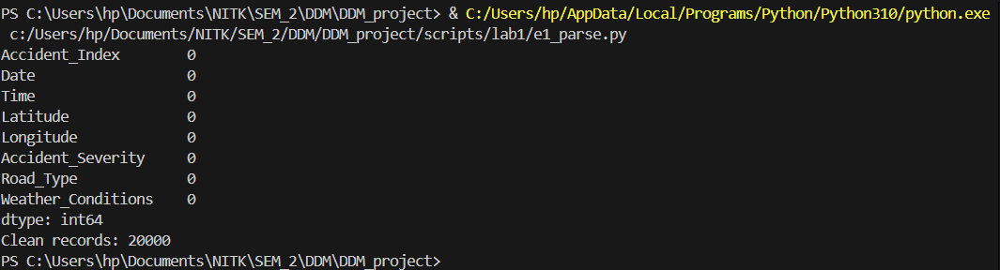
Binary serialization and data aggregation operations.
import pandas as pd
df = pd.read_csv("./data/Accidents_small.csv")
# Severity-wise accident count
severity_count = df['Accident_Severity'].value_counts()
print("\nAccidents by Severity:")
print(severity_count)
# Road type vs accident count
road_count = df['Road_Type'].value_counts().head(10)
print("\nTop Road Types:")
print(road_count)
# Weather conditions vs accident count
weather_count = df['Weather_Conditions'].value_counts().head(10)
print("\nTop Weather Conditions:")
print(weather_count)
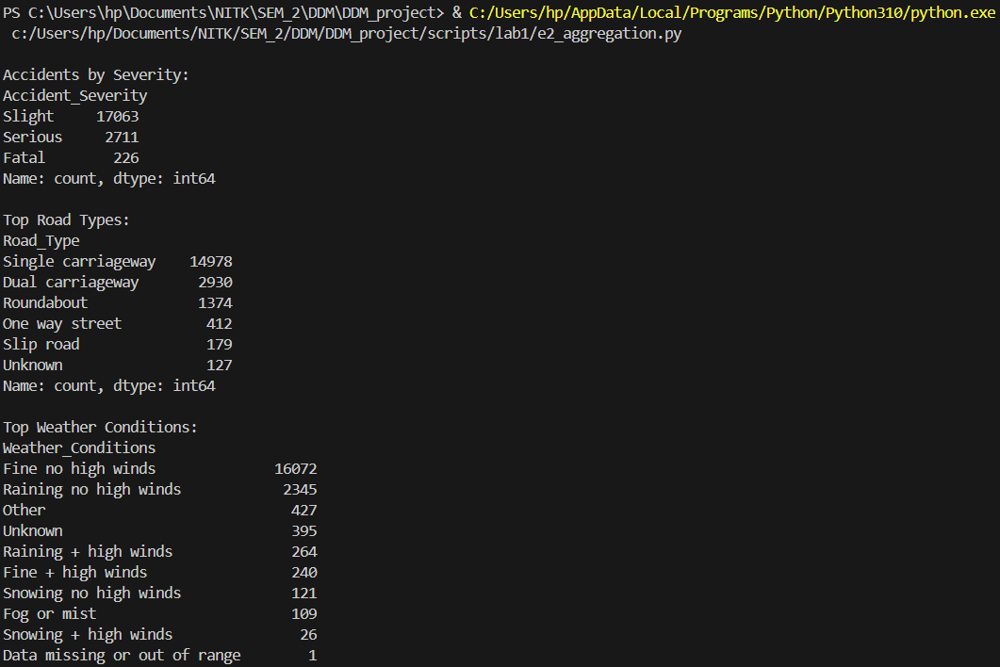
Regex-based text cleaning to standardize varying road definitions.
import pandas as pd
import re
# Load the accidents dataset
df = pd.read_csv("./data/Accidents_small.csv")
print("="*60)
print("Exercise 3: Regular Expressions")
print("="*60)
# 1. Pattern Matching - Find specific patterns in weather conditions
print("\n1. PATTERN MATCHING - Weather conditions containing 'Rain'")
# Search for weather conditions with 'Rain' pattern
rain_pattern = r'Rain'
rain_mask = df['Weather_Conditions'].astype(str).str.contains(rain_pattern, case=False, na=False)
rain_accidents = df[rain_mask]
print(f"Found {len(rain_accidents)} accidents in rainy conditions")
print(df[rain_mask]['Weather_Conditions'].value_counts().head())
# 2. String Splitting - Split composite fields
print("\n2. STRING SPLITTING - Extracting time components from Date field")
# Example: Split date/time if it exists in proper format
df['Date_str'] = df['Date'].astype(str)
# Pattern to split date components (assuming format like DD/MM/YYYY)
date_pattern = r'(\d{2})/(\d{2})/(\d{4})'
sample_dates = df['Date_str'].head(10)
print("Sample dates:")
for date in sample_dates:
match = re.search(date_pattern, str(date))
if match:
day, month, year = match.groups()
print(f" {date} -> Day: {day}, Month: {month}, Year: {year}")
# 3. String Replacing - Clean and standardize text data
print("\n3. STRING REPLACING - Cleaning weather conditions")
# Remove special characters and numbers from weather conditions
df['Weather_Clean'] = df['Weather_Conditions'].apply(
lambda x: re.sub(r'[^a-zA-Z\s]', '', str(x))
)
# Remove extra whitespace
df['Weather_Clean'] = df['Weather_Clean'].apply(
lambda x: re.sub(r'\s+', ' ', str(x)).strip()
)
print("\nOriginal vs Cleaned Weather Conditions (sample):")
comparison = df[['Weather_Conditions', 'Weather_Clean']].head(10)
for idx, row in comparison.iterrows():
if row['Weather_Conditions'] != row['Weather_Clean']:
print(f" Original: '{row['Weather_Conditions']}'")
print(f" Cleaned: '{row['Weather_Clean']}'")
print()
# Additional regex operations
print("\n4. ADDITIONAL REGEX - Extracting severity level")
# Extract numeric values from severity if stored as text
severity_counts = df['Accident_Severity'].value_counts()
print("Accident Severity Distribution:")
print(severity_counts)
# Replace abbreviations in Road_Type
print("\n5. STRING REPLACEMENT - Standardizing Road Type")
df['Road_Type_Clean'] = df['Road_Type'].astype(str).apply(
lambda x: re.sub(r'\bSt\b', 'Street', x) # Replace St with Street
)
df['Road_Type_Clean'] = df['Road_Type_Clean'].apply(
lambda x: re.sub(r'\bRd\b', 'Road', x) # Replace Rd with Road
)
# Show unique road types before and after cleaning
print(f"Unique road types (original): {df['Road_Type'].nunique()}")
print(f"Unique road types (cleaned): {df['Road_Type_Clean'].nunique()}")
print("\n" + "="*60)
print("Exercise 3 Complete!")
print("="*60)
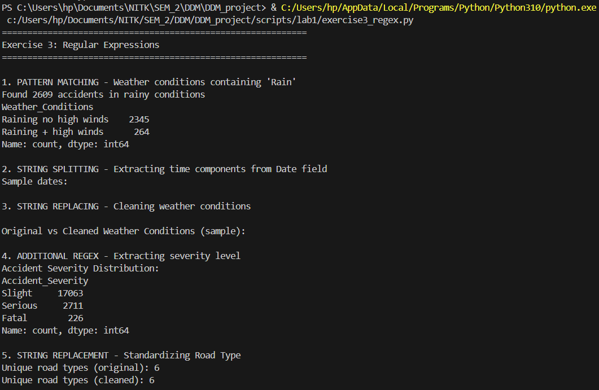
Architecting a relational schema with robust SQLite CRUD operations.
import sqlite3
import pandas as pd
# Load the accidents dataset
df = pd.read_csv("./data/Accidents_small.csv")
print("="*60)
print("Exercise 4: SQL Database - CRUD Operations")
print("="*60)
# Connect to SQLite database (creates if doesn't exist)
conn = sqlite3.connect("accidents.db")
cursor = conn.cursor()
# CREATE - Design schema and create table
print("\n1. CREATE - Creating database schema")
cursor.execute('''
CREATE TABLE IF NOT EXISTS accidents (
Accident_Index TEXT PRIMARY KEY,
Date TEXT,
Time TEXT,
Latitude REAL,
Longitude REAL,
Accident_Severity TEXT,
Road_Type TEXT,
Weather_Conditions TEXT
)
''')
print("[OK] Table 'accidents' created successfully")
# INSERT - Populate database from CSV (CREATE operation)
print("\n2. INSERT - Populating database from CSV")
df_clean = df.dropna(subset=['Latitude', 'Longitude'])
df_clean.to_sql('accidents', conn, if_exists='replace', index=False)
print(f"[OK] Inserted {len(df_clean)} records into database")
# READ - Query data with SELECT (READ operation)
print("\n3. READ - Querying data with SELECT")
# Query 1: Get all fatal accidents
print("\n a) Fatal accidents:")
query1 = "SELECT Accident_Index, Date, Time, Accident_Severity FROM accidents WHERE Accident_Severity = 'Fatal' LIMIT 5"
result1 = pd.read_sql(query1, conn)
print(result1)
# Query 2: Count accidents by severity
print("\n b) Count of accidents by severity:")
query2 = "SELECT Accident_Severity, COUNT(*) as Count FROM accidents GROUP BY Accident_Severity ORDER BY Count DESC"
result2 = pd.read_sql(query2, conn)
print(result2)
# Query 3: Accidents in specific weather conditions
print("\n c) Accidents in rainy weather:")
query3 = "SELECT Weather_Conditions, COUNT(*) as Count FROM accidents WHERE Weather_Conditions LIKE '%Rain%' GROUP BY Weather_Conditions LIMIT 5"
result3 = pd.read_sql(query3, conn)
print(result3)
# Query 4: Accidents on specific road types
print("\n d) Single carriageway accidents:")
query4 = "SELECT Accident_Index, Road_Type, Accident_Severity, Date FROM accidents WHERE Road_Type = 'Single carriageway' LIMIT 5"
result4 = pd.read_sql(query4, conn)
print(result4)
# UPDATE - Modify existing records (UPDATE operation)
print("\n4. UPDATE - Modifying existing records")
# Update 1: Standardize road types
update_query1 = '''
UPDATE accidents
SET Road_Type = 'Dual carriageway'
WHERE Road_Type LIKE '%Dual%'
'''
cursor.execute(update_query1)
rows_updated1 = cursor.rowcount
print(f" a) Standardized {rows_updated1} dual carriageway records")
# Update 2: Standardize weather conditions
update_query2 = '''
UPDATE accidents
SET Weather_Conditions = 'Fine'
WHERE Weather_Conditions LIKE '%Fine%' OR Weather_Conditions LIKE '%Clear%'
'''
cursor.execute(update_query2)
rows_updated2 = cursor.rowcount
print(f" b) Standardized {rows_updated2} weather condition records to 'Fine'")
conn.commit()
# Verify updates
print("\n Verification - Updated severity distribution:")
verify_query = "SELECT Accident_Severity, COUNT(*) as Count FROM accidents GROUP BY Accident_Severity"
verify_result = pd.read_sql(verify_query, conn)
print(verify_result)
# DELETE - Remove records (DELETE operation)
print("\n5. DELETE - Removing records")
# First, check how many records have missing data
delete_check_query = "SELECT COUNT(*) as Count FROM accidents WHERE Latitude IS NULL OR Longitude IS NULL"
delete_check = pd.read_sql(delete_check_query, conn)
print(f" Records with missing coordinates: {delete_check['Count'].iloc[0]}")
# Delete records with missing coordinates
delete_query = "DELETE FROM accidents WHERE Latitude IS NULL OR Longitude IS NULL"
cursor.execute(delete_query)
rows_deleted = cursor.rowcount
conn.commit()
print(f"[OK] Deleted {rows_deleted} records with missing coordinates")
# Final statistics
print("\n6. FINAL STATISTICS")
stats_query = "SELECT COUNT(*) as Total_Records FROM accidents"
total_records = pd.read_sql(stats_query, conn)
print(f" Total records in database: {total_records['Total_Records'].iloc[0]}")
stats_query2 = '''
SELECT
COUNT(DISTINCT Road_Type) as Unique_Road_Types,
COUNT(DISTINCT Weather_Conditions) as Unique_Weather
FROM accidents
'''
data_stats = pd.read_sql(stats_query2, conn)
print("\n Data Diversity:")
print(data_stats)
# Close connection
conn.close()
print("\n" + "="*60)
print("Exercise 4 Complete!")
print("Database saved as: accidents.db")
print("="*60)
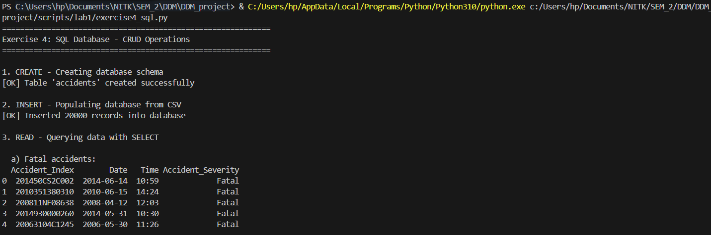
Deploying NoSQL aggregations for flexible document queries.
from pymongo import MongoClient
from pymongo.errors import ConnectionFailure, ServerSelectionTimeoutError
import pandas as pd
print("="*60)
print("Exercise 5: MongoDB Operations")
print("="*60)
# Load the accidents dataset
df = pd.read_csv("./data/Accidents_small.csv")
try:
# Setup MongoDB client connection
print("\n1. SETUP - Connecting to MongoDB")
client = MongoClient('localhost', 27017, serverSelectionTimeoutMS=5000)
# Test connection
client.admin.command('ismaster')
print("[OK] Connected to MongoDB successfully")
# Select database and collection
db = client.road_safety
collection = db.accidents
# Clear existing data for fresh start
collection.delete_many({})
print("[OK] Collection cleared for fresh start")
# INSERT - Insert documents from dataset
print("\n2. INSERT - Inserting documents")
# Convert DataFrame to list of dictionaries
records = df.head(1000).to_dict('records') # Using first 1000 records for demo
result = collection.insert_many(records)
print(f"[OK] Inserted {len(result.inserted_ids)} documents")
# SEARCH - Query documents using various filters
print("\n3. SEARCH - Querying documents")
# Search 1: Find fatal accidents
print("\n a) Fatal accidents:")
fatal_accidents = collection.find({'Accident_Severity': 'Fatal'}).limit(3)
for i, accident in enumerate(fatal_accidents, 1):
print(f" {i}. Index: {accident.get('Accident_Index')}, Time: {accident.get('Time')}")
# Search 2: Count accidents by severity
print("\n b) Count by severity:")
severity_counts = collection.aggregate([
{'$group': {'_id': '$Accident_Severity', 'count': {'$sum': 1}}},
{'$sort': {'count': -1}}
])
for doc in severity_counts:
print(f" {doc['_id']}: {doc['count']} accidents")
# Search 3: Find accidents with specific weather
print("\n c) Accidents in rainy conditions:")
rain_count = collection.count_documents({'Weather_Conditions': {'$regex': 'Rain', '$options': 'i'}})
print(f" Found {rain_count} accidents in rainy weather")
# Search 4: Complex query - northern accidents
print("\n d) Northern accidents (lat > 54):")
northern = collection.find(
{'Latitude': {'$gt': 54}},
{'Accident_Index': 1, 'Latitude': 1, 'Date': 1, '_id': 0}
).sort('Latitude', -1).limit(3)
for accident in northern:
print(f" {accident}")
# UPDATE - Modify existing documents
print("\n4. UPDATE - Updating documents")
# Update 1: Update single document
update_result1 = collection.update_one(
{'Accident_Severity': 'Slight'},
{'$set': {'Severity_Code': 3}}
)
print(f" a) Updated {update_result1.modified_count} document with severity code")
# Update 2: Update multiple documents
update_result2 = collection.update_many(
{'Accident_Severity': 'Fatal'},
{'$set': {'Severity_Code': 1, 'Priority': 'Critical'}}
)
print(f" b) Updated {update_result2.modified_count} fatal accidents with labels")
# Update 3: Add new field
update_result3 = collection.update_many(
{'Road_Type': {'$exists': True}},
{'$set': {'Last_Updated': 'Lab Exercise 5'}}
)
print(f" c) Added update field to {update_result3.modified_count} documents")
# REPLACE - Replace entire document
print("\n5. REPLACE - Replacing documents")
sample_doc = collection.find_one({'Accident_Severity': 'Serious'})
if sample_doc:
doc_id = sample_doc['_id']
new_doc = {
'Accident_Index': sample_doc.get('Accident_Index'),
'Accident_Severity': 'Serious',
'Severity_Code': 2,
'Replaced': True,
'Note': 'This document was replaced in Exercise 5'
}
replace_result = collection.replace_one({'_id': doc_id}, new_doc)
print(f" [OK] Replaced {replace_result.modified_count} document")
# REMOVE - Delete documents based on conditions
print("\n6. REMOVE - Deleting documents")
# Delete 1: Remove documents with missing data
delete_result1 = collection.delete_many({'$or': [
{'Latitude': None},
{'Longitude': None}
]})
print(f" a) Deleted {delete_result1.deleted_count} documents with missing coordinates")
# Note: Not deleting more to preserve data
print(f" b) (Skipped bulk deletion to preserve data)")
# AGGREGATION - Use aggregation pipeline for data analysis
print("\n7. AGGREGATION - Aggregation pipeline")
# Aggregation 1: Average latitude by severity
print("\n a) Average latitude by severity:")
agg_pipeline1 = [
{'$group': {
'_id': '$Accident_Severity',
'avg_latitude': {'$avg': '$Latitude'},
'total_accidents': {'$sum': 1}
}},
{'$sort': {'total_accidents': -1}}
]
agg_result1 = collection.aggregate(agg_pipeline1)
for doc in agg_result1:
print(f" {doc['_id']}: Avg lat {doc['avg_latitude']:.4f}, {doc['total_accidents']} accidents")
# Aggregation 2: Top weather conditions
print("\n b) Top 5 weather conditions:")
agg_pipeline2 = [
{'$group': {'_id': '$Weather_Conditions', 'count': {'$sum': 1}}},
{'$sort': {'count': -1}},
{'$limit': 5}
]
agg_result2 = collection.aggregate(agg_pipeline2)
for doc in agg_result2:
print(f" {doc['_id']}: {doc['count']} accidents")
# Aggregation 3: Complex aggregation
print("\n c) Accidents by severity and road type (top 5):")
agg_pipeline3 = [
{'$group': {
'_id': {
'severity': '$Accident_Severity',
'road': '$Road_Type'
},
'count': {'$sum': 1}
}},
{'$sort': {'count': -1}},
{'$limit': 5}
]
agg_result3 = collection.aggregate(agg_pipeline3)
for doc in agg_result3:
print(f" {doc['_id']['severity']}, {doc['_id']['road']}: {doc['count']} accidents")
# INDEXES - Create indexes for performance optimization
print("\n8. INDEXES - Creating indexes")
# Index 1: Single field index
collection.create_index('Accident_Severity')
print(" a) [OK] Created index on 'Accident_Severity'")
# Index 2: Compound index
collection.create_index([('Accident_Severity', 1), ('Date', -1)])
print(" b) [OK] Created compound index on 'Accident_Severity' and 'Date'")
# Index 3: Geospatial index (2d)
collection.create_index([('Latitude', 1), ('Longitude', 1)])
print(" c) [OK] Created index on coordinates")
# List all indexes
print("\n All indexes:")
for index in collection.list_indexes():
print(f" - {index['name']}")
# Final statistics
print("\n9. FINAL STATISTICS")
total_docs = collection.count_documents({})
print(f" Total documents in collection: {total_docs}")
# Close connection
client.close()
print("\n" + "="*60)
print("Exercise 5 Complete!")
print("="*60)
except (ConnectionFailure, ServerSelectionTimeoutError) as e:
print("\n[ERROR] Cannot connect to MongoDB")
print(" Please ensure MongoDB is installed and running.")
print(f" Error details: {e}")
print("\n To install MongoDB:")
print(" 1. Download from: https://www.mongodb.com/try/download/community")
print(" 2. Install and start the MongoDB service")
print(" 3. Run this script again")
print("\n Alternatively, install pymongo: pip install pymongo")
print("\n" + "="*60)
except Exception as e:
print(f"\n[ERROR] {type(e).__name__}: {e}")
print("="*60)
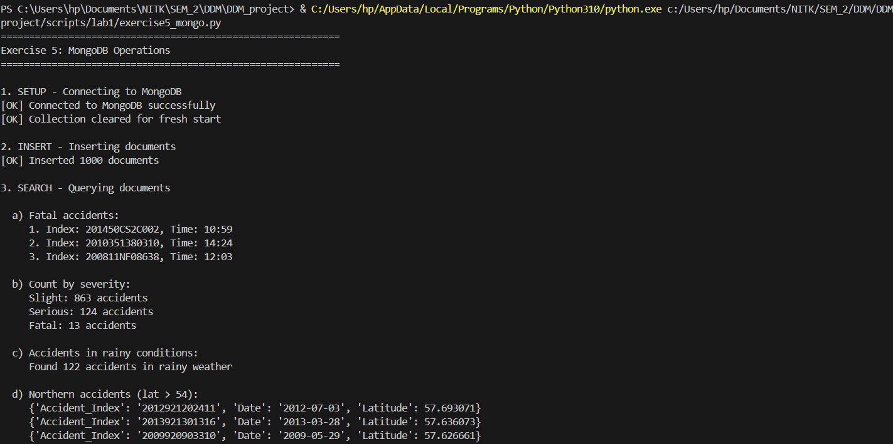
High-performance vectorized mathematics on geographic matrices.
import pandas as pd
import numpy as np
# Load the accidents dataset
df = pd.read_csv("./data/Accidents_small.csv")
print("="*60)
print("Exercise 6: NumPy Array Operations")
print("="*60)
# 1. CREATE ARRAYS from different sources
print("\n1. CREATE ARRAYS - From different sources")
# From list
print("\n a) Array from list:")
severity_list = [1, 2, 3, 1, 2, 3, 2, 1]
arr_from_list = np.array(severity_list)
print(f" {arr_from_list}")
print(f" Shape: {arr_from_list.shape}, Dtype: {arr_from_list.dtype}")
# From range
print("\n b) Array from range:")
arr_range = np.arange(0, 100, 10)
print(f" {arr_range}")
# From CSV/DataFrame - coordinates
print("\n c) Array from DataFrame (coordinates):")
df_clean = df.dropna(subset=['Latitude', 'Longitude'])
coords_array = np.array(df_clean[['Latitude', 'Longitude']])
print(f" Shape: {coords_array.shape}")
print(f" First 5 rows:\n{coords_array[:5]}")
# Special arrays
print("\n d) Special arrays:")
zeros_arr = np.zeros((3, 4))
print(f" Zeros (3x4):\n{zeros_arr}")
ones_arr = np.ones((2, 3))
print(f" Ones (2x3):\n{ones_arr}")
identity_arr = np.eye(4)
print(f" Identity (4x4):\n{identity_arr}")
# 2. RESHAPE arrays to different dimensions
print("\n2. RESHAPE - Arrays to different dimensions")
# Create base array
base_arr = np.arange(24)
print(f"\n a) Original array (24 elements):\n {base_arr}")
# Reshape to 2D
reshaped_2d = base_arr.reshape(6, 4)
print(f"\n b) Reshaped to 6x4:\n{reshaped_2d}")
# Reshape to 3D
reshaped_3d = base_arr.reshape(2, 3, 4)
print(f"\n c) Reshaped to 2x3x4 (showing first 3D element):\n{reshaped_3d[0]}")
# Flatten back
flattened = reshaped_3d.flatten()
print(f"\n d) Flattened back:\n {flattened}")
# Transpose
lat_data = np.array(df_clean['Latitude'].head(12)).reshape(3, 4)
print(f"\n e) Latitude matrix (3x4):\n{lat_data}")
transposed = lat_data.T
print(f"\n f) Transposed (4x3):\n{transposed}")
# 3. SLICE arrays - Extract subarrays
print("\n3. SLICE - Extracting subarrays")
# Create sample data array
sample_data = coords_array[:20] # Just coordinates
print(f"\n a) Original data shape: {sample_data.shape}")
print(f" First 3 rows:\n{sample_data[:3]}")
# Row slicing
print(f"\n b) Rows 5-10:\n{sample_data[5:10]}")
# Column slicing
print(f"\n c) First column (Latitude) - first 5:\n {sample_data[:5, 0]}")
# Fancy indexing
indices = [0, 5, 10, 15]
print(f"\n d) Rows at indices {indices}:\n{sample_data[indices]}")
# Boolean indexing - find northern accidents (latitude > 54)
northern_mask = sample_data[:, 0] > 54
northern_accidents = sample_data[northern_mask]
print(f"\n e) Northern accidents (lat > 54): {len(northern_accidents)} found")
if len(northern_accidents) > 0:
print(f" First 3:\n{northern_accidents[:3]}")
# 4. ARITHMETIC operations
print("\n4. ARITHMETIC - Operations on arrays")
# Extract latitude and longitude
latitudes = coords_array[:100, 0]
longitudes = coords_array[:100, 1]
print(f"\n a) Latitudes (first 5): {latitudes[:5]}")
print(f" Longitudes (first 5): {longitudes[:5]}")
# Addition
coord_sum = latitudes + np.abs(longitudes) # Add absolute longitude
print(f"\n b) Addition (lat + abs(lon), first 5):\n {coord_sum[:5]}")
# Subtraction
coord_diff = latitudes - 50 # Normalize around 50
print(f"\n c) Subtraction (lat - 50, first 5):\n {coord_diff[:5]}")
# Multiplication
scaled_lat = latitudes * 2
print(f"\n d) Multiplication (lat * 2, first 5):\n {scaled_lat[:5]}")
# Division
normalized = (latitudes - latitudes.mean()) / latitudes.std()
print(f"\n e) Normalization (first 5):\n {normalized[:5]}")
# Element-wise operations
squared = latitudes ** 2
print(f"\n f) Power (lat squared, first 5):\n {squared[:5]}")
# 5. LOGIC operations
print("\n5. LOGIC - Boolean operations on arrays")
print(f"\n a) Latitude array (first 20): {latitudes[:20]}")
# Comparison operations
northern = latitudes > 54
print(f"\n b) Northern locations (lat > 54):\n Count: {northern.sum()}")
southern = latitudes < 52
print(f"\n c) Southern locations (lat < 52):\n Count: {southern.sum()}")
# Combined logic
midland = (latitudes >= 52) & (latitudes <= 54)
print(f"\n d) Midland locations (52 <= lat <= 54):\n Count: {midland.sum()}")
# Logical OR
extreme = (latitudes < 51) | (latitudes > 55)
print(f"\n e) Extreme north or south:\n Count: {extreme.sum()}")
# 6. AGGREGATION functions
print("\n6. AGGREGATION - Statistical operations")
# Basic stats on latitudes
print(f"\n a) Latitude statistics:")
print(f" Mean: {np.mean(latitudes):.4f}")
print(f" Median: {np.median(latitudes):.4f}")
print(f" Std Dev: {np.std(latitudes):.4f}")
print(f" Min: {np.min(latitudes):.4f}")
print(f" Max: {np.max(latitudes):.4f}")
print(f" Range: {np.ptp(latitudes):.4f}")
# Coordinate statistics
print(f"\n b) Coordinate statistics (mean location):")
mean_coords = np.mean(coords_array, axis=0)
print(f" Mean Latitude: {mean_coords[0]:.4f}")
print(f" Mean Longitude: {mean_coords[1]:.4f}")
# Percentiles
print(f"\n c) Latitude percentiles:")
percentiles = [25, 50, 75, 95]
for p in percentiles:
val = np.percentile(latitudes, p)
print(f" {p}th percentile: {val:.4f}")
# Multi-dimensional aggregation
lat_matrix = coords_array[:20, 0].reshape(4, 5)
print(f"\n d) Latitude matrix (4x5):\n{lat_matrix}")
print(f"\n Row means (axis=1): {np.mean(lat_matrix, axis=1)}")
print(f" Column means (axis=0): {np.mean(lat_matrix, axis=0)}")
# Cumulative operations
print(f"\n e) Cumulative sum of differences (first 10):")
lat_diffs = np.diff(latitudes[:11]) # Get 10 differences from 11 values
print(f" Differences: {lat_diffs}")
print(f" Cumulative: {np.cumsum(lat_diffs)}")
print("\n" + "="*60)
print("Exercise 6 Complete!")
print("="*60)
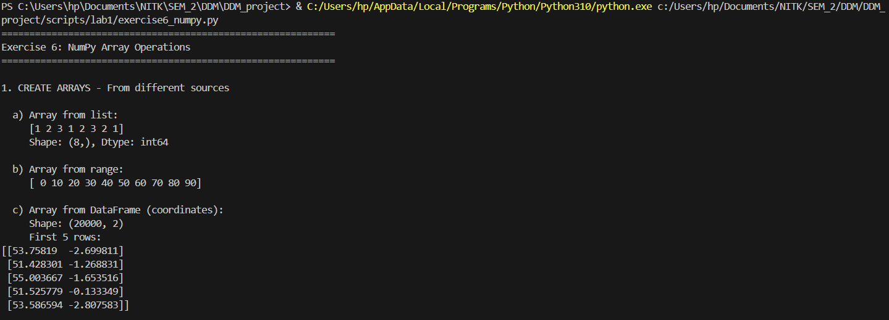
Multi-level dataframe aggregations capturing baseline data trends.
import pandas as pd
import numpy as np
import matplotlib.pyplot as plt
# Load the accidents dataset
df = pd.read_csv("./data/Accidents_small.csv")
print("="*60)
print("Exercise 7: Pandas Comprehensive Operations")
print("="*60)
# 1. SINGLE-LEVEL INDEXING
print("\n1. SINGLE-LEVEL INDEXING")
# Set index
df_indexed = df.set_index('Accident_Index')
print(f" a) Set 'Accident_Index' as index")
print(f" Shape: {df_indexed.shape}")
print(f" First 3 index values:")
print(f" {df_indexed.index[:3].tolist()}")
# Access by index
if len(df_indexed) > 0:
first_index = df_indexed.index[0]
print(f"\n b) Access by index:")
print(df_indexed.loc[first_index, ['Accident_Severity', 'Weather_Conditions']])
# 2. HIERARCHICAL INDEXING
print("\n2. HIERARCHICAL INDEXING")
# Create multi-level index
df_multi = df.set_index(['Accident_Severity', 'Road_Type'])
print(f" a) Multi-level index (Severity, Road Type)")
print(f" Index levels: {df_multi.index.names}")
print(f" First 5 index values:")
for idx in df_multi.index[:5]:
print(f" {idx}")
# Access multi-level
print(f"\n b) Access fatal accidents:")
if 'Fatal' in df_multi.index.get_level_values(0):
fatal_data = df_multi.loc['Fatal']
print(f" Count: {len(fatal_data)}")
print(f" Road types: {fatal_data.index.unique().tolist()}")
# 3. HANDLING MISSING DATA
print("\n3. HANDLING MISSING DATA")
# Detect missing values
print(f" a) Missing values per column:")
missing_counts = df.isnull().sum()
if missing_counts.sum() > 0:
print(missing_counts[missing_counts > 0])
else:
print(" No missing values detected!")
# Drop rows with missing critical data
df_clean = df.dropna(subset=['Latitude', 'Longitude'])
print(f"\n b) Dropped rows with missing coordinates:")
print(f" Original: {len(df)} rows")
print(f" After drop: {len(df_clean)} rows")
print(f" Removed: {len(df) - len(df_clean)} rows")
# Fill missing values (create synthetic missing data for demonstration)
df_demo = df_clean.copy()
df_demo.loc[df_demo.index[:100:10], 'Time'] = None # Add some missing values
filled_time = df_demo['Time'].fillna('00:00')
print(f"\n c) Filled missing time values: {df_demo['Time'].isnull().sum()} -> 0")
# 4. ARITHMETIC OPERATIONS on columns and tables
print("\n4. ARITHMETIC OPERATIONS")
# Create numeric column from latitude
df_clean['Lat_Normalized'] = (df_clean['Latitude'] - 50) * 10
print(f" a) Normalized latitude (first 5):")
print(f" {df_clean['Lat_Normalized'].head().tolist()}")
# Column statistics
print(f"\n b) Latitude statistics:")
print(f" Mean: {df_clean['Latitude'].mean():.4f}")
print(f" Median: {df_clean['Latitude'].median():.4f}")
print(f" Std: {df_clean['Latitude'].std():.4f}")
# Operations between columns
df_clean['Lon_Lat_Sum'] = df_clean['Longitude'] + df_clean['Latitude']
print(f"\n c) Longitude + Latitude (first 5):")
print(f" {df_clean['Lon_Lat_Sum'].head().tolist()}")
# 5. BOOLEAN OPERATIONS
print("\n5. BOOLEAN OPERATIONS")
# Filter data
fatal_accidents = df_clean[df_clean['Accident_Severity'] == 'Fatal']
print(f" a) Fatal accidents: {len(fatal_accidents)}")
serious_accidents = df_clean[df_clean['Accident_Severity'] == 'Serious']
print(f" b) Serious accidents: {len(serious_accidents)}")
# Combined boolean - fatal or serious
severe = df_clean[df_clean['Accident_Severity'].isin(['Fatal', 'Serious'])]
print(f" c) Fatal OR Serious: {len(severe)}")
# Complex filter - rainy single carriageway
rainy_single = df_clean[
(df_clean['Weather_Conditions'].str.contains('Rain', na=False)) &
(df_clean['Road_Type'] == 'Single carriageway')
]
print(f" d) Rainy single carriageway accidents: {len(rainy_single)}")
# 6. DATABASE-TYPE OPERATIONS (merging and aggregation)
print("\n6. DATABASE-TYPE OPERATIONS")
# Create sample severity reference table
severity_ref = pd.DataFrame({
'Accident_Severity': ['Fatal', 'Serious', 'Slight'],
'Severity_Code': [1, 2, 3],
'Priority': ['Critical', 'High', 'Medium']
})
# Merge
df_merged = df_clean.merge(severity_ref, on='Accident_Severity', how='left')
print(f" a) Merged with severity reference:")
print(df_merged[['Accident_Severity', 'Severity_Code', 'Priority']].head())
# Create another sample dataset for concatenation
df_sample1 = df_clean.head(100)
df_sample2 = df_clean.tail(100)
# Concatenate
df_concat = pd.concat([df_sample1, df_sample2], ignore_index=True)
print(f"\n b) Concatenated two samples: {len(df_concat)} rows")
# Join (using index)
df_indexed1 = df_clean.head(50).set_index('Accident_Index')
df_indexed2 = df_clean.head(30).set_index('Accident_Index')[['Weather_Conditions']]
df_joined = df_indexed1.join(df_indexed2, how='inner', rsuffix='_check')
print(f"\n c) Joined on index: {len(df_joined)} rows")
# 7. AGGREGATION operations
print("\n7. AGGREGATION OPERATIONS")
# GroupBy single column
print(f" a) Accidents by severity:")
severity_groups = df_clean.groupby('Accident_Severity').agg({
'Accident_Index': 'count',
'Latitude': ['mean', 'std']
})
print(severity_groups)
# GroupBy multiple columns
print(f"\n b) Accidents by severity and road type (top 10):")
multi_groups = df_clean.groupby(['Accident_Severity', 'Road_Type']).size()
print(multi_groups.head(10))
# Custom aggregation
print(f"\n c) Top weather conditions:")
weather_agg = df_clean.groupby('Weather_Conditions').agg({
'Accident_Index': 'count',
'Latitude': 'mean'
}).sort_values('Accident_Index', ascending=False).head(5)
weather_agg.columns = ['Count', 'Avg_Latitude']
print(weather_agg)
# 8. PLOTTING individual columns and whole tables
print("\n8. PLOTTING")
# Create figure with multiple subplots
fig, axes = plt.subplots(2, 2, figsize=(14, 10))
fig.suptitle('UK Road Accidents Analysis', fontsize=16, fontweight='bold')
# Plot 1: Scatter plot - Accident locations
axes[0, 0].scatter(df_clean['Longitude'], df_clean['Latitude'], alpha=0.3, s=1, c='red')
axes[0, 0].set_title('Accident Locations (Scatter)')
axes[0, 0].set_xlabel('Longitude')
axes[0, 0].set_ylabel('Latitude')
axes[0, 0].grid(True, alpha=0.3)
# Plot 2: Bar plot - Accidents by severity
severity_counts = df_clean['Accident_Severity'].value_counts()
colors = {'Fatal': 'red', 'Serious': 'orange', 'Slight': 'yellow'}
bar_colors = [colors.get(x, 'gray') for x in severity_counts.index]
axes[0, 1].bar(range(len(severity_counts)), severity_counts.values, color=bar_colors)
axes[0, 1].set_title('Accidents by Severity')
axes[0, 1].set_xlabel('Severity Level')
axes[0, 1].set_ylabel('Count')
axes[0, 1].set_xticks(range(len(severity_counts)))
axes[0, 1].set_xticklabels(severity_counts.index, rotation=45)
axes[0, 1].grid(True, alpha=0.3, axis='y')
# Plot 3: Histogram - Latitude distribution
axes[1, 0].hist(df_clean['Latitude'], bins=50, color='steelblue', edgecolor='black')
axes[1, 0].set_title('Distribution of Accident Latitudes')
axes[1, 0].set_xlabel('Latitude')
axes[1, 0].set_ylabel('Frequency')
axes[1, 0].grid(True, alpha=0.3, axis='y')
# Plot 4: Pie chart - Road types
road_counts = df_clean['Road_Type'].value_counts().head(5)
axes[1, 1].pie(road_counts.values, labels=road_counts.index, autopct='%1.1f%%', startangle=90)
axes[1, 1].set_title('Top 5 Road Types')
plt.tight_layout()
# Save the plot
plt.savefig('./data/accident_analysis.png', dpi=150, bbox_inches='tight')
print(" [OK] Created 4-panel visualization")
print(" [OK] Saved to: ./data/accident_analysis.png")
# Additional individual column plot
plt.figure(figsize=(10, 6))
top_weather = df_clean['Weather_Conditions'].value_counts().head(10)
top_weather.plot(kind='barh', color='skyblue')
plt.title('Top 10 Weather Conditions', fontsize=14, fontweight='bold')
plt.xlabel('Number of Accidents')
plt.ylabel('Weather Condition')
plt.grid(True, alpha=0.3, axis='x')
plt.tight_layout()
plt.savefig('./data/weather_conditions.png', dpi=150, bbox_inches='tight')
print(" [OK] Created weather conditions plot")
print(" [OK] Saved to: ./data/weather_conditions.png")
# 9. READING from and WRITING data to files
print("\n9. FILE I/O OPERATIONS")
# Write to different formats
print(" a) Writing to files:")
# CSV
df_clean.head(100).to_csv('./data/accidents_clean_sample.csv', index=False)
print(" [OK] CSV: ./data/accidents_clean_sample.csv")
# Excel (requires openpyxl)
try:
df_clean.head(100).to_excel('./data/accidents_clean_sample.xlsx', index=False, sheet_name='Accidents')
print(" [OK] Excel: ./data/accidents_clean_sample.xlsx")
except ImportError:
print(" [SKIP] Excel: openpyxl not installed")
# JSON
df_clean.head(50).to_json('./data/accidents_clean_sample.json', orient='records', indent=2)
print(" [OK] JSON: ./data/accidents_clean_sample.json")
# Pickle (binary)
df_clean.head(100).to_pickle('./data/accidents_clean_sample.pkl')
print(" [OK] Pickle: ./data/accidents_clean_sample.pkl")
# Read back from files
print("\n b) Reading from files:")
# CSV
df_from_csv = pd.read_csv('./data/accidents_clean_sample.csv')
print(f" [OK] CSV loaded: {len(df_from_csv)} rows")
# JSON
df_from_json = pd.read_json('./data/accidents_clean_sample.json')
print(f" [OK] JSON loaded: {len(df_from_json)} rows")
# Pickle
df_from_pickle = pd.read_pickle('./data/accidents_clean_sample.pkl')
print(f" [OK] Pickle loaded: {len(df_from_pickle)} rows")
# HTML (for web display)
df_clean.head(20).to_html('./data/accidents_table.html', index=False)
print(f" [OK] HTML table: ./data/accidents_table.html")
print("\n" + "="*60)
print("Exercise 7 Complete!")
print("All plots saved to ./data/ directory")
print("="*60)
# Show plots
print("\nDisplaying plots...")
plt.show()
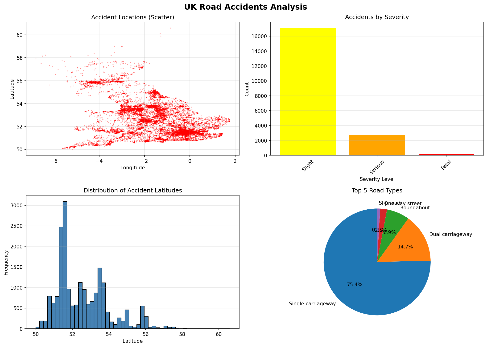
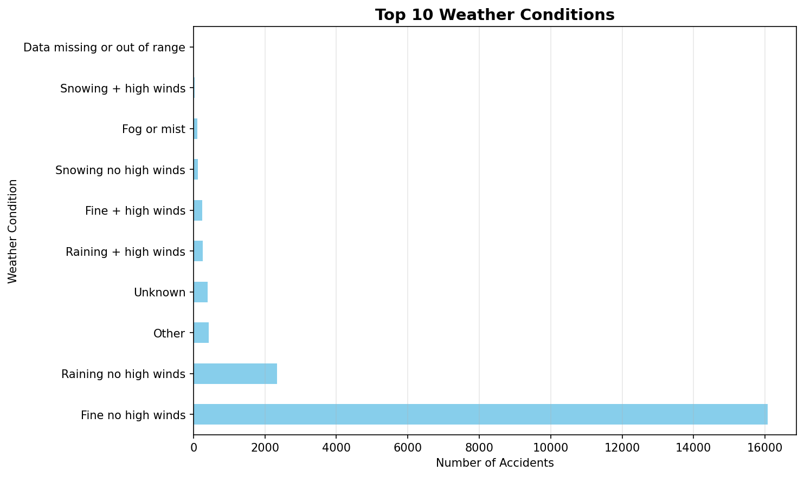
Investigating dataframe structure and optimizing memory footprint.
"""
Experiment 1: Loading & Displaying Data
Description: Read a dataset from a CSV file into a DataFrame and view its content and structure
"""
import pandas as pd
print("=" * 70)
print("Experiment 1: Loading & Displaying Data")
print("=" * 70)
# Load the dataset
print("\n1. LOADING DATA FROM CSV")
df = pd.read_csv('./data/Accidents_small.csv')
print(f"[OK] Dataset loaded successfully")
print(f" Dataset shape: {df.shape} (rows, columns)")
# Display basic information
print("\n2. DATASET STRUCTURE")
print("\n a) Column names and data types:")
print(df.dtypes)
print("\n b) Dataset info:")
df.info()
# Display first few rows
print("\n3. PREVIEW DATA")
print("\n a) First 5 rows (head):")
print(df.head())
print("\n b) Last 5 rows (tail):")
print(df.tail())
# Display random sample
print("\n c) Random sample (5 rows):")
print(df.sample(5, random_state=42))
# Statistical summary
print("\n4. STATISTICAL SUMMARY")
print("\n a) Numerical columns summary:")
print(df.describe())
print("\n b) Categorical columns summary:")
print(df.describe(include='object'))
# Column-wise information
print("\n5. COLUMN-WISE DETAILS")
print(f"\n Total columns: {len(df.columns)}")
print(f" Column names: {list(df.columns)}")
print("\n Data types distribution:")
print(df.dtypes.value_counts())
# Memory usage
print("\n6. MEMORY USAGE")
print(f"\n Total memory usage: {df.memory_usage(deep=True).sum() / 1024:.2f} KB")
print("\n Per-column memory usage:")
print(df.memory_usage(deep=True))
print("\n" + "=" * 70)
print("Experiment 1 Complete!")
print("=" * 70)
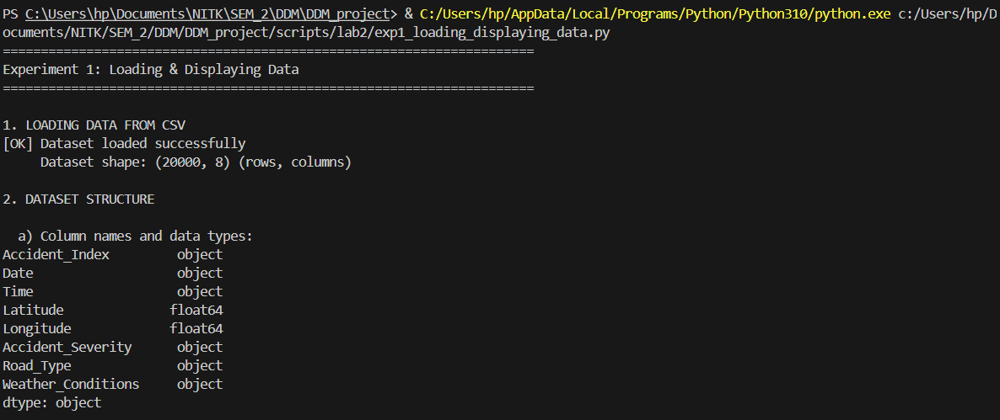
Tiered imputation strategies resolving Null coordinates and categorical features.
"""
Experiment 2: Handling Missing Data
Description: Identify and manage missing values (NaNs) in the data by imputing them (e.g., using the mean)
"""
import pandas as pd
import numpy as np
print("=" * 70)
print("Experiment 2: Handling Missing Data")
print("=" * 70)
# Load the dataset
df = pd.read_csv('./data/Accidents_small.csv')
print(f"[OK] Dataset loaded: {df.shape}")
# 1. IDENTIFY MISSING VALUES
print("\n1. IDENTIFYING MISSING VALUES")
print("\n a) Missing values count per column:")
missing_counts = df.isnull().sum()
print(missing_counts[missing_counts > 0] if missing_counts.sum() > 0 else " No missing values detected!")
print("\n b) Missing values percentage:")
missing_percent = (df.isnull().sum() / len(df)) * 100
print(missing_percent[missing_percent > 0] if missing_percent.sum() > 0 else " No missing values detected!")
print("\n c) Total missing values in dataset:")
print(f" {df.isnull().sum().sum()} missing values")
# Create synthetic missing data for demonstration
print("\n2. CREATING SYNTHETIC MISSING DATA (For demonstration)")
df_demo = df.copy()
# Introduce missing values in numeric columns
df_demo.loc[df_demo.sample(frac=0.1, random_state=42).index, 'Latitude'] = np.nan
df_demo.loc[df_demo.sample(frac=0.15, random_state=43).index, 'Longitude'] = np.nan
# Introduce missing values in categorical columns
df_demo.loc[df_demo.sample(frac=0.05, random_state=44).index, 'Weather_Conditions'] = np.nan
df_demo.loc[df_demo.sample(frac=0.08, random_state=45).index, 'Road_Type'] = np.nan
print("\n Missing values after introducing synthetic NaNs:")
missing_after = df_demo.isnull().sum()
print(missing_after[missing_after > 0])
# 3. HANDLING MISSING VALUES - DIFFERENT STRATEGIES
print("\n3. HANDLING MISSING VALUES")
# Strategy 1: Fill with mean (for numeric columns)
print("\n a) Imputing with MEAN (Numeric columns):")
df_mean_imputed = df_demo.copy()
df_mean_imputed['Latitude'] = df_mean_imputed['Latitude'].fillna(df_mean_imputed['Latitude'].mean())
df_mean_imputed['Longitude'] = df_mean_imputed['Longitude'].fillna(df_mean_imputed['Longitude'].mean())
print(f" Latitude - Before: {df_demo['Latitude'].isnull().sum()}, After: {df_mean_imputed['Latitude'].isnull().sum()}")
print(f" Longitude - Before: {df_demo['Longitude'].isnull().sum()}, After: {df_mean_imputed['Longitude'].isnull().sum()}")
# Strategy 2: Fill with median (for numeric columns)
print("\n b) Imputing with MEDIAN (Numeric columns):")
df_median_imputed = df_demo.copy()
df_median_imputed['Latitude'] = df_median_imputed['Latitude'].fillna(df_median_imputed['Latitude'].median())
df_median_imputed['Longitude'] = df_median_imputed['Longitude'].fillna(df_median_imputed['Longitude'].median())
print(f" Latitude - Mean: {df_demo['Latitude'].mean():.4f}, Median: {df_demo['Latitude'].median():.4f}")
print(f" Imputed with median successfully")
# Strategy 3: Fill with mode (for categorical columns)
print("\n c) Imputing with MODE (Categorical columns):")
df_mode_imputed = df_demo.copy()
weather_mode = df_mode_imputed['Weather_Conditions'].mode()[0]
road_mode = df_mode_imputed['Road_Type'].mode()[0]
df_mode_imputed['Weather_Conditions'] = df_mode_imputed['Weather_Conditions'].fillna(weather_mode)
df_mode_imputed['Road_Type'] = df_mode_imputed['Road_Type'].fillna(road_mode)
print(f" Weather_Conditions - Mode: '{weather_mode}'")
print(f" Road_Type - Mode: '{road_mode}'")
print(f" Imputed successfully")
# Strategy 4: Forward fill
print("\n d) Forward Fill (ffill):")
df_ffill = df_demo.copy()
df_ffill = df_ffill.ffill()
print(f" Total missing after ffill: {df_ffill.isnull().sum().sum()}")
# Strategy 5: Backward fill
print("\n e) Backward Fill (bfill):")
df_bfill = df_demo.copy()
df_bfill = df_bfill.bfill()
print(f" Total missing after bfill: {df_bfill.isnull().sum().sum()}")
# Strategy 6: Drop rows with missing values
print("\n f) Dropping Rows with Missing Values:")
df_dropped = df_demo.dropna()
print(f" Original rows: {len(df_demo)}")
print(f" After dropping: {len(df_dropped)}")
print(f" Rows removed: {len(df_demo) - len(df_dropped)}")
# Strategy 7: Drop columns with too many missing values
print("\n g) Dropping Columns with >20% Missing Values:")
threshold = 0.2
missing_frac = df_demo.isnull().sum() / len(df_demo)
cols_to_drop = missing_frac[missing_frac > threshold].index.tolist()
print(f" Columns to drop: {cols_to_drop if cols_to_drop else 'None'}")
# 4. COMBINED STRATEGY
print("\n4. COMBINED IMPUTATION STRATEGY")
df_final = df_demo.copy()
# Fill numeric with mean
numeric_cols = df_final.select_dtypes(include=[np.number]).columns
for col in numeric_cols:
df_final[col] = df_final[col].fillna(df_final[col].mean())
# Fill categorical with mode
categorical_cols = df_final.select_dtypes(include=['object']).columns
for col in categorical_cols:
if df_final[col].isnull().sum() > 0:
df_final[col] = df_final[col].fillna(df_final[col].mode()[0])
print(f" Total missing values after combined imputation: {df_final.isnull().sum().sum()}")
print(f" [OK] All missing values handled!")
print("\n" + "=" * 70)
print("Experiment 2 Complete!")
print("=" * 70)
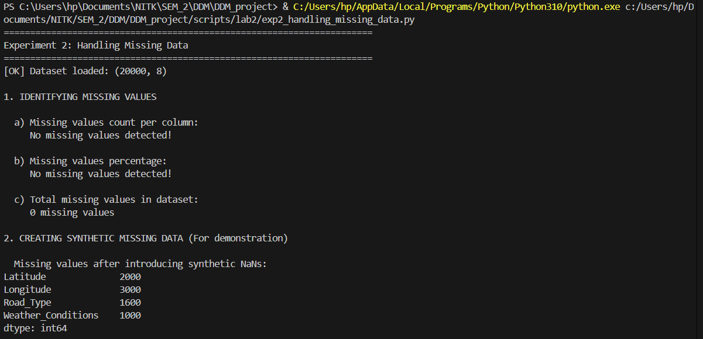
Transforming qualitative features into dense numerical encodings.
"""
Experiment 3: Handling Categorical Data
Description: Convert non-numeric data into a numerical format for modeling (e.g., one-hot encoding)
"""
import pandas as pd
from sklearn.preprocessing import LabelEncoder, OrdinalEncoder
print("=" * 70)
print("Experiment 3: Handling Categorical Data")
print("=" * 70)
# Load the dataset
df = pd.read_csv('./data/Accidents_small.csv')
print(f"[OK] Dataset loaded: {df.shape}")
# 1. IDENTIFY CATEGORICAL COLUMNS
print("\n1. IDENTIFYING CATEGORICAL COLUMNS")
categorical_cols = df.select_dtypes(include=['object']).columns.tolist()
print(f"\n Categorical columns found: {len(categorical_cols)}")
print(f" Column names: {categorical_cols}")
print("\n Unique values per categorical column:")
for col in categorical_cols:
print(f" {col}: {df[col].nunique()} unique values")
# 2. LABEL ENCODING
print("\n2. LABEL ENCODING (Converting to integers)")
print(" Converting categorical values to integer labels (0, 1, 2, ...)")
df_label_encoded = df.copy()
# Apply label encoding to Accident_Severity
le_severity = LabelEncoder()
df_label_encoded['Accident_Severity_Encoded'] = le_severity.fit_transform(df['Accident_Severity'])
print(f"\n a) Accident_Severity:")
print(f" Original values: {df['Accident_Severity'].unique()[:5]}")
print(f" Encoded values: {df_label_encoded['Accident_Severity_Encoded'].unique()}")
print(f" Mapping: {dict(zip(le_severity.classes_, range(len(le_severity.classes_))))}")
# Apply label encoding to Weather_Conditions
le_weather = LabelEncoder()
df_label_encoded['Weather_Conditions_Encoded'] = le_weather.fit_transform(df['Weather_Conditions'].fillna('Unknown'))
print(f"\n b) Weather_Conditions:")
print(f" Unique categories: {len(le_weather.classes_)}")
print(f" Sample mapping: {dict(list(zip(le_weather.classes_[:5], range(5))))}")
# 3. ONE-HOT ENCODING
print("\n3. ONE-HOT ENCODING (Creating binary columns)")
print(" Creating separate binary columns for each category")
# One-hot encode Accident_Severity
print(f"\n a) One-hot encoding Accident_Severity:")
severity_dummies = pd.get_dummies(df['Accident_Severity'], prefix='Severity')
print(f" Created {len(severity_dummies.columns)} columns:")
print(f" Columns: {list(severity_dummies.columns)}")
print(f"\n Sample data:")
print(severity_dummies.head())
# One-hot encode Road_Type
print(f"\n b) One-hot encoding Road_Type:")
road_dummies = pd.get_dummies(df['Road_Type'], prefix='Road')
print(f" Created {len(road_dummies.columns)} columns")
print(f" Columns: {list(road_dummies.columns)}")
# Combine with original dataframe
df_one_hot = pd.concat([df, severity_dummies, road_dummies], axis=1)
print(f"\n c) Combined DataFrame shape after one-hot encoding:")
print(f" Original: {df.shape}")
print(f" After one-hot: {df_one_hot.shape}")
# 4. GET_DUMMIES WITH DROP_FIRST (Avoiding dummy variable trap)
print("\n4. ONE-HOT ENCODING WITH DROP_FIRST")
print(" Dropping first category to avoid multicollinearity")
severity_dummies_drop = pd.get_dummies(df['Accident_Severity'], prefix='Severity', drop_first=True)
print(f"\n Accident_Severity with drop_first=True:")
print(f" Columns: {list(severity_dummies_drop.columns)}")
print(f" (Dropped first category to avoid redundancy)")
# 5. ORDINAL ENCODING (For ordered categories)
print("\n5. ORDINAL ENCODING (For ordered categories)")
# Create ordered encoding for Accident_Severity (Fatal < Serious < Slight)
severity_order = ['Fatal', 'Serious', 'Slight']
df_ordinal = df.copy()
df_ordinal['Severity_Ordinal'] = df_ordinal['Accident_Severity'].map(
{severity: idx for idx, severity in enumerate(severity_order)}
)
print(f"\n Accident_Severity with ordinal encoding:")
print(f" Mapping: {dict(zip(severity_order, range(len(severity_order))))}")
print(f" Sample values:")
print(df_ordinal[['Accident_Severity', 'Severity_Ordinal']].head())
# 6. FREQUENCY ENCODING
print("\n6. FREQUENCY ENCODING")
print(" Encoding based on category frequency")
weather_freq = df['Weather_Conditions'].value_counts(normalize=True)
df_freq = df.copy()
df_freq['Weather_Frequency'] = df['Weather_Conditions'].map(weather_freq)
print(f"\n Weather_Conditions frequency encoding:")
print(f" Top 5 most frequent:")
print(weather_freq.head())
print(f"\n Sample encoded data:")
print(df_freq[['Weather_Conditions', 'Weather_Frequency']].head())
# 7. COMBINING MULTIPLE ENCODING TECHNIQUES
print("\n7. COMPLETE CATEGORICAL DATA TRANSFORMATION")
df_transformed = df.copy()
# Keep only necessary columns
print(f"\n a) Starting with original categorical columns:")
print(f" {categorical_cols}")
# Apply one-hot encoding to selected columns
categorical_to_encode = ['Accident_Severity', 'Road_Type']
df_encoded = pd.get_dummies(df_transformed, columns=categorical_to_encode, drop_first=True)
print(f"\n b) After one-hot encoding:")
print(f" New shape: {df_encoded.shape}")
print(f" New columns added: {df_encoded.shape[1] - df_transformed.shape[1]}")
# Apply label encoding to remaining categorical
remaining_categorical = ['Weather_Conditions']
for col in remaining_categorical:
if col in df_encoded.columns:
le = LabelEncoder()
df_encoded[f'{col}_Encoded'] = le.fit_transform(df_encoded[col].fillna('Unknown'))
df_encoded.drop(col, axis=1, inplace=True)
print(f"\n c) After label encoding remaining columns:")
print(f" Final shape: {df_encoded.shape}")
print(f" All categorical data transformed to numeric!")
print("\n d) Final dataset data types:")
print(df_encoded.dtypes.value_counts())
print("\n" + "=" * 70)
print("Experiment 3 Complete!")
print("=" * 70)
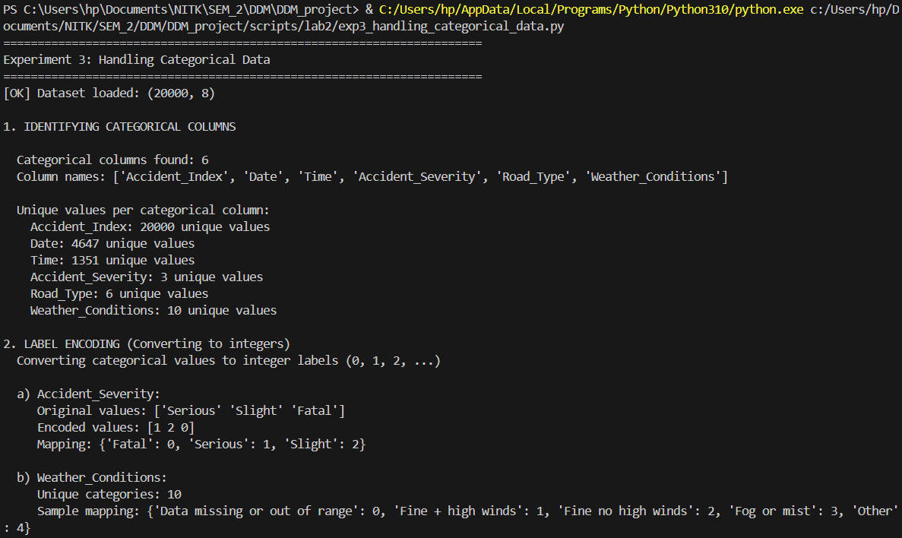
Comprehensive data visualization mapping exploratory data features.
"""
Experiment 4: Data Visualization & EDA
Description: Analyze data patterns and relationships using plots like histograms, scatter plots, and correlation heatmaps
"""
import pandas as pd
import numpy as np
import matplotlib.pyplot as plt
import seaborn as sns
print("=" * 70)
print("Experiment 4: Data Visualization & Exploratory Data Analysis")
print("=" * 70)
# Load the dataset
df = pd.read_csv('./data/Accidents_small.csv')
print(f"[OK] Dataset loaded: {df.shape}")
# Clean data - remove rows with missing coordinates
df_clean = df.dropna(subset=['Latitude', 'Longitude'])
print(f"[OK] Cleaned dataset: {df_clean.shape}")
# Set style for better-looking plots
sns.set_style("whitegrid")
plt.rcParams['figure.figsize'] = (12, 8)
# 1. UNIVARIATE ANALYSIS
print("\n1. UNIVARIATE ANALYSIS")
print(" Analyzing individual variables")
# Create figure for univariate plots
fig1, axes1 = plt.subplots(2, 2, figsize=(15, 12))
fig1.suptitle('Univariate Analysis', fontsize=16, fontweight='bold', y=0.995)
# Plot 1: Histogram - Latitude distribution
axes1[0, 0].hist(df_clean['Latitude'], bins=50, color='steelblue', edgecolor='black', alpha=0.7)
axes1[0, 0].set_title('Distribution of Accident Latitudes', fontweight='bold')
axes1[0, 0].set_xlabel('Latitude')
axes1[0, 0].set_ylabel('Frequency')
axes1[0, 0].grid(True, alpha=0.3)
# Plot 2: Bar plot - Accident Severity
severity_counts = df_clean['Accident_Severity'].value_counts()
colors_severity = {'Fatal': '#d62728', 'Serious': '#ff7f0e', 'Slight': '#2ca02c'}
bar_colors = [colors_severity.get(x, 'gray') for x in severity_counts.index]
axes1[0, 1].bar(severity_counts.index, severity_counts.values, color=bar_colors, edgecolor='black', alpha=0.7)
axes1[0, 1].set_title('Accidents by Severity Level', fontweight='bold')
axes1[0, 1].set_xlabel('Severity')
axes1[0, 1].set_ylabel('Count')
axes1[0, 1].grid(True, alpha=0.3, axis='y')
# Plot 3: Horizontal bar - Top 10 Weather Conditions
weather_counts = df_clean['Weather_Conditions'].value_counts().head(10)
axes1[1, 0].barh(range(len(weather_counts)), weather_counts.values, color='skyblue', edgecolor='black')
axes1[1, 0].set_yticks(range(len(weather_counts)))
axes1[1, 0].set_yticklabels(weather_counts.index, fontsize=9)
axes1[1, 0].set_title('Top 10 Weather Conditions', fontweight='bold')
axes1[1, 0].set_xlabel('Count')
axes1[1, 0].invert_yaxis()
axes1[1, 0].grid(True, alpha=0.3, axis='x')
# Plot 4: Pie chart - Road Type distribution
road_counts = df_clean['Road_Type'].value_counts().head(5)
axes1[1, 1].pie(road_counts.values, labels=road_counts.index, autopct='%1.1f%%',
startangle=90, colors=sns.color_palette('Set3'))
axes1[1, 1].set_title('Top 5 Road Types Distribution', fontweight='bold')
plt.tight_layout()
plt.savefig('./data/lab2_univariate_analysis.png', dpi=150, bbox_inches='tight')
print(" [OK] Saved: ./data/lab2_univariate_analysis.png")
# 2. BIVARIATE ANALYSIS
print("\n2. BIVARIATE ANALYSIS")
print(" Analyzing relationships between two variables")
fig2, axes2 = plt.subplots(2, 2, figsize=(15, 12))
fig2.suptitle('Bivariate Analysis', fontsize=16, fontweight='bold', y=0.995)
# Plot 1: Scatter plot - Latitude vs Longitude (Geographic distribution)
severity_colors = {'Fatal': 'red', 'Serious': 'orange', 'Slight': 'green'}
for severity in df_clean['Accident_Severity'].unique():
subset = df_clean[df_clean['Accident_Severity'] == severity]
axes2[0, 0].scatter(subset['Longitude'], subset['Latitude'],
alpha=0.4, s=10, label=severity,
color=severity_colors.get(severity, 'gray'))
axes2[0, 0].set_title('Geographic Distribution of Accidents by Severity', fontweight='bold')
axes2[0, 0].set_xlabel('Longitude')
axes2[0, 0].set_ylabel('Latitude')
axes2[0, 0].legend()
axes2[0, 0].grid(True, alpha=0.3)
# Plot 2: Box plot - Latitude by Severity
severity_order = ['Fatal', 'Serious', 'Slight']
df_clean['Accident_Severity'] = pd.Categorical(df_clean['Accident_Severity'],
categories=severity_order, ordered=True)
sns.boxplot(data=df_clean, x='Accident_Severity', y='Latitude',
palette='Set2', ax=axes2[0, 1])
axes2[0, 1].set_title('Latitude Distribution by Accident Severity', fontweight='bold')
axes2[0, 1].set_xlabel('Accident Severity')
axes2[0, 1].set_ylabel('Latitude')
axes2[0, 1].grid(True, alpha=0.3, axis='y')
# Plot 3: Count plot - Severity by Road Type (top 5 road types)
top_roads = df_clean['Road_Type'].value_counts().head(5).index
df_top_roads = df_clean[df_clean['Road_Type'].isin(top_roads)]
sns.countplot(data=df_top_roads, x='Road_Type', hue='Accident_Severity',
palette='Set1', ax=axes2[1, 0])
axes2[1, 0].set_title('Accident Severity by Road Type (Top 5)', fontweight='bold')
axes2[1, 0].set_xlabel('Road Type')
axes2[1, 0].set_ylabel('Count')
axes2[1, 0].tick_params(axis='x', rotation=45)
axes2[1, 0].legend(title='Severity')
axes2[1, 0].grid(True, alpha=0.3, axis='y')
# Plot 4: Violin plot - Longitude by Severity
sns.violinplot(data=df_clean, x='Accident_Severity', y='Longitude',
palette='muted', ax=axes2[1, 1])
axes2[1, 1].set_title('Longitude Distribution by Accident Severity', fontweight='bold')
axes2[1, 1].set_xlabel('Accident Severity')
axes2[1, 1].set_ylabel('Longitude')
axes2[1, 1].grid(True, alpha=0.3, axis='y')
plt.tight_layout()
plt.savefig('./data/lab2_bivariate_analysis.png', dpi=150, bbox_inches='tight')
print(" [OK] Saved: ./data/lab2_bivariate_analysis.png")
# 3. CORRELATION ANALYSIS
print("\n3. CORRELATION ANALYSIS")
print(" Analyzing relationships between numeric variables")
# Create a dataframe with numeric features
df_numeric = df_clean.copy()
# Encode categorical variables for correlation
from sklearn.preprocessing import LabelEncoder
le_severity = LabelEncoder()
le_road = LabelEncoder()
le_weather = LabelEncoder()
df_numeric['Severity_Code'] = le_severity.fit_transform(df_numeric['Accident_Severity'])
df_numeric['Road_Code'] = le_road.fit_transform(df_numeric['Road_Type'])
df_numeric['Weather_Code'] = le_weather.fit_transform(df_numeric['Weather_Conditions'].fillna('Unknown'))
# Select numeric columns for correlation
numeric_cols = ['Latitude', 'Longitude', 'Severity_Code', 'Road_Code', 'Weather_Code']
correlation_matrix = df_numeric[numeric_cols].corr()
# Create correlation heatmap
fig3, ax3 = plt.subplots(figsize=(10, 8))
sns.heatmap(correlation_matrix, annot=True, fmt='.3f', cmap='coolwarm',
center=0, square=True, linewidths=1, cbar_kws={"shrink": 0.8},
ax=ax3)
ax3.set_title('Correlation Heatmap of Numeric Features', fontweight='bold', fontsize=14, pad=20)
plt.tight_layout()
plt.savefig('./data/lab2_correlation_heatmap.png', dpi=150, bbox_inches='tight')
print(" [OK] Saved: ./data/lab2_correlation_heatmap.png")
print("\n Correlation insights:")
print(f" Strongest positive correlation: {correlation_matrix.abs().unstack().sort_values(ascending=False).drop_duplicates().iloc[1]:.3f}")
print(f" Features analyzed: {', '.join(numeric_cols)}")
# 4. MULTIVARIATE ANALYSIS
print("\n4. MULTIVARIATE ANALYSIS")
print(" Analyzing multiple variables together")
# Pair plot for numeric features (sample)
print("\n Creating pair plot (this may take a moment)...")
sample_df = df_numeric[['Latitude', 'Longitude', 'Severity_Code']].sample(min(1000, len(df_numeric)), random_state=42)
pair_plot = sns.pairplot(sample_df, diag_kind='hist', plot_kws={'alpha': 0.6})
pair_plot.fig.suptitle('Pair Plot: Coordinates and Severity', y=1.02, fontweight='bold')
plt.savefig('./data/lab2_pairplot.png', dpi=150, bbox_inches='tight')
print(" [OK] Saved: ./data/lab2_pairplot.png")
# 5. TIME SERIES PATTERNS (if applicable)
print("\n5. ADDITIONAL EDA INSIGHTS")
# Distribution comparisons
fig5, axes5 = plt.subplots(1, 2, figsize=(15, 5))
fig5.suptitle('Distribution Comparisons', fontsize=14, fontweight='bold')
# KDE plot for latitude by severity
for severity in severity_order:
subset = df_clean[df_clean['Accident_Severity'] == severity]
axes5[0].hist(subset['Latitude'], bins=30, alpha=0.5, label=severity, density=True)
axes5[0].set_title('Latitude Distribution by Severity (Overlapping)', fontweight='bold')
axes5[0].set_xlabel('Latitude')
axes5[0].set_ylabel('Density')
axes5[0].legend()
axes5[0].grid(True, alpha=0.3)
# Top weather conditions by severity
top_weather = df_clean.groupby(['Weather_Conditions', 'Accident_Severity']).size().reset_index(name='count')
top_weather_pivot = top_weather.pivot(index='Weather_Conditions', columns='Accident_Severity', values='count').fillna(0)
top_weather_pivot = top_weather_pivot.nlargest(8, severity_order).loc[:, severity_order]
top_weather_pivot.plot(kind='barh', stacked=True, ax=axes5[1], color=['red', 'orange', 'green'])
axes5[1].set_title('Top Weather Conditions by Severity (Stacked)', fontweight='bold')
axes5[1].set_xlabel('Count')
axes5[1].set_ylabel('Weather Condition')
axes5[1].legend(title='Severity')
axes5[1].grid(True, alpha=0.3, axis='x')
plt.tight_layout()
plt.savefig('./data/lab2_additional_eda.png', dpi=150, bbox_inches='tight')
print(" [OK] Saved: ./data/lab2_additional_eda.png")
# Summary statistics
print("\n6. SUMMARY STATISTICS")
print("\n a) Key insights from the dataset:")
print(f" Total accidents: {len(df_clean)}")
print(f" Severity distribution:")
for severity in severity_order:
count = len(df_clean[df_clean['Accident_Severity'] == severity])
pct = (count / len(df_clean)) * 100
print(f" {severity}: {count} ({pct:.1f}%)")
print(f"\n b) Geographic coverage:")
print(f" Latitude range: {df_clean['Latitude'].min():.3f} to {df_clean['Latitude'].max():.3f}")
print(f" Longitude range: {df_clean['Longitude'].min():.3f} to {df_clean['Longitude'].max():.3f}")
print(f"\n c) Data diversity:")
print(f" Unique weather conditions: {df_clean['Weather_Conditions'].nunique()}")
print(f" Unique road types: {df_clean['Road_Type'].nunique()}")
print("\n" + "=" * 70)
print("Experiment 4 Complete!")
print("All visualizations saved to ./data/ directory")
print("=" * 70)
# Display plots
print("\nDisplaying plots...")
plt.show()
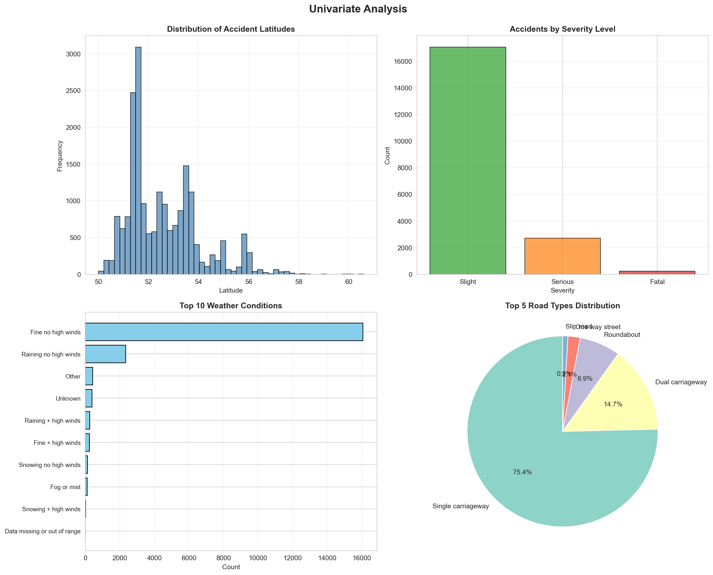
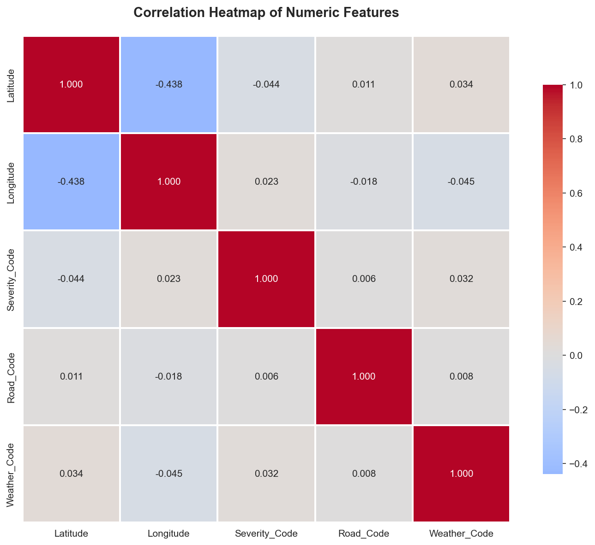
Extracting clean coordinate matrices optimized for clustering execution.
"""
Lab 2 Part 2 - Experiment 1: Spatial Data Preparation & Exploration
Paper: Kernel density estimation and K-means clustering to profile road accident hotspots
This script prepares and explores the spatial distribution of accident data.
"""
import pandas as pd
import numpy as np
import matplotlib.pyplot as plt
import seaborn as sns
from datetime import datetime
# Set style
sns.set_style("whitegrid")
plt.rcParams['figure.figsize'] = (12, 8)
print("="*70)
print("EXPERIMENT 1: SPATIAL DATA PREPARATION & EXPLORATION")
print("="*70)
# Load the dataset
print("\n1. Loading Accident Dataset...")
df = pd.read_csv('./data/Accident_Information.csv')
print(f" Loaded {len(df)} accident records")
print(f" Columns: {list(df.columns)}")
# Display basic information
print("\n2. Dataset Info:")
print(df.info())
# Check for missing values in spatial columns
print("\n3. Missing Values in Key Columns:")
print(df[['Latitude', 'Longitude', 'Accident_Severity', 'Date']].isnull().sum())
# Remove rows with missing spatial coordinates
print("\n4. Cleaning Data...")
original_count = len(df)
df = df.dropna(subset=['Latitude', 'Longitude'])
print(f" Removed {original_count - len(df)} records with missing coordinates")
print(f" Remaining records: {len(df)}")
# Basic statistics for spatial coordinates
print("\n5. Spatial Coordinate Statistics:")
print(df[['Latitude', 'Longitude']].describe())
# Severity distribution
print("\n6. Accident Severity Distribution:")
severity_counts = df['Accident_Severity'].value_counts()
print(severity_counts)
# Road type distribution
print("\n7. Road Type Distribution (Top 10):")
road_counts = df['Road_Type'].value_counts().head(10)
print(road_counts)
# Weather conditions distribution
print("\n8. Weather Conditions Distribution (Top 10):")
weather_counts = df['Weather_Conditions'].value_counts().head(10)
print(weather_counts)
# Parse date for temporal analysis
print("\n9. Temporal Analysis...")
df['Date'] = pd.to_datetime(df['Date'], errors='coerce')
df['Year'] = df['Date'].dt.year
df['Month'] = df['Date'].dt.month
df['DayOfWeek'] = df['Date'].dt.dayofweek
print(" Accidents by Year:")
print(df['Year'].value_counts().sort_index())
# =============================================================================
# VISUALIZATIONS
# =============================================================================
print("\n10. Generating Visualizations...")
# Create figure with subplots
fig = plt.figure(figsize=(16, 12))
# 1. Scatter plot of accident locations
ax1 = plt.subplot(2, 3, 1)
scatter = ax1.scatter(df['Longitude'], df['Latitude'],
c='red', alpha=0.3, s=1, edgecolors='none')
ax1.set_xlabel('Longitude', fontsize=10)
ax1.set_ylabel('Latitude', fontsize=10)
ax1.set_title('Geographic Distribution of Accidents', fontsize=12, fontweight='bold')
ax1.grid(True, alpha=0.3)
# 2. Severity distribution pie chart
ax2 = plt.subplot(2, 3, 2)
severity_counts.plot(kind='pie', ax=ax2, autopct='%1.1f%%', startangle=90)
ax2.set_ylabel('')
ax2.set_title('Accident Severity Distribution', fontsize=12, fontweight='bold')
# 3. Road type distribution (top 10)
ax3 = plt.subplot(2, 3, 3)
road_counts.plot(kind='barh', ax=ax3, color='steelblue')
ax3.set_xlabel('Number of Accidents', fontsize=10)
ax3.set_title('Top 10 Road Types', fontsize=12, fontweight='bold')
ax3.invert_yaxis()
# 4. Weather conditions (top 10)
ax4 = plt.subplot(2, 3, 4)
weather_counts.plot(kind='barh', ax=ax4, color='coral')
ax4.set_xlabel('Number of Accidents', fontsize=10)
ax4.set_title('Top 10 Weather Conditions', fontsize=12, fontweight='bold')
ax4.invert_yaxis()
# 5. Accidents by year
ax5 = plt.subplot(2, 3, 5)
year_counts = df['Year'].value_counts().sort_index()
year_counts.plot(kind='bar', ax=ax5, color='green', alpha=0.7)
ax5.set_xlabel('Year', fontsize=10)
ax5.set_ylabel('Number of Accidents', fontsize=10)
ax5.set_title('Accidents by Year', fontsize=12, fontweight='bold')
ax5.tick_params(axis='x', rotation=45)
# 6. Accidents by month
ax6 = plt.subplot(2, 3, 6)
month_counts = df['Month'].value_counts().sort_index()
month_names = ['Jan', 'Feb', 'Mar', 'Apr', 'May', 'Jun',
'Jul', 'Aug', 'Sep', 'Oct', 'Nov', 'Dec']
ax6.bar(range(1, 13), [month_counts.get(i, 0) for i in range(1, 13)],
color='purple', alpha=0.7)
ax6.set_xlabel('Month', fontsize=10)
ax6.set_ylabel('Number of Accidents', fontsize=10)
ax6.set_title('Accidents by Month', fontsize=12, fontweight='bold')
ax6.set_xticks(range(1, 13))
ax6.set_xticklabels(month_names, rotation=45)
plt.tight_layout()
plt.savefig('./data/lab2part2_spatial_exploration.png', dpi=300, bbox_inches='tight')
print(f" Saved: lab2part2_spatial_exploration.png")
# Additional: Hexbin plot for spatial density
fig2, ax = plt.subplots(figsize=(12, 10))
hexbin = ax.hexbin(df['Longitude'], df['Latitude'], gridsize=50,
cmap='YlOrRd', mincnt=1)
ax.set_xlabel('Longitude', fontsize=12)
ax.set_ylabel('Latitude', fontsize=12)
ax.set_title('Accident Density (Hexbin)', fontsize=14, fontweight='bold')
plt.colorbar(hexbin, ax=ax, label='Number of Accidents')
plt.savefig('./data/lab2part2_hexbin_density.png', dpi=300, bbox_inches='tight')
print(f" Saved: lab2part2_hexbin_density.png")
# Save cleaned dataset for next experiments
print("\n11. Saving Cleaned Dataset...")
df.to_csv('./data/lab2part2_cleaned_data.csv', index=False)
print(f" Saved: lab2part2_cleaned_data.csv ({len(df)} records)")
# Summary statistics
print("\n" + "="*70)
print("SUMMARY")
print("="*70)
print(f"Total Accidents Analyzed: {len(df)}")
print(f"Latitude Range: [{df['Latitude'].min():.4f}, {df['Latitude'].max():.4f}]")
print(f"Longitude Range: [{df['Longitude'].min():.4f}, {df['Longitude'].max():.4f}]")
print(f"Most Common Severity: {severity_counts.index[0]} ({severity_counts.iloc[0]} accidents)")
print(f"Most Common Road Type: {road_counts.index[0]} ({road_counts.iloc[0]} accidents)")
print(f"Most Common Weather: {weather_counts.index[0]} ({weather_counts.iloc[0]} accidents)")
print("="*70)
plt.show()
Applying Kernel Density Estimation for mapping continuous risk probabilities.
"""
Lab 2 Part 2 - Experiment 2: Kernel Density Estimation (KDE) Analysis
Paper: Kernel density estimation and K-means clustering to profile road accident hotspots
This script applies Kernel Density Estimation to identify accident density patterns.
"""
import pandas as pd
import numpy as np
import matplotlib.pyplot as plt
import seaborn as sns
from scipy.stats import gaussian_kde
from scipy import stats
# Set style
sns.set_style("whitegrid")
plt.rcParams['figure.figsize'] = (14, 10)
print("="*70)
print("EXPERIMENT 2: KERNEL DENSITY ESTIMATION (KDE) ANALYSIS")
print("="*70)
# Load cleaned dataset
print("\n1. Loading Cleaned Dataset...")
df = pd.read_csv('./data/lab2part2_cleaned_data.csv')
print(f" Loaded {len(df)} accident records")
# Extract spatial coordinates
print("\n2. Extracting Spatial Coordinates...")
coordinates = df[['Longitude', 'Latitude']].values
longitudes = df['Longitude'].values
latitudes = df['Latitude'].values
print(f" Longitude range: [{longitudes.min():.4f}, {longitudes.max():.4f}]")
print(f" Latitude range: [{latitudes.min():.4f}, {latitudes.max():.4f}]")
# =============================================================================
# 2D KERNEL DENSITY ESTIMATION
# =============================================================================
print("\n3. Computing 2D Kernel Density Estimation...")
print(" This may take a moment...")
# Create KDE
try:
kde = gaussian_kde(coordinates.T)
print(" KDE computation successful")
# Create grid for evaluation
x_min, x_max = longitudes.min() - 0.5, longitudes.max() + 0.5
y_min, y_max = latitudes.min() - 0.5, latitudes.max() + 0.5
# Create meshgrid (reduce resolution for performance)
xx, yy = np.meshgrid(np.linspace(x_min, x_max, 200),
np.linspace(y_min, y_max, 200))
# Evaluate KDE on grid
print(" Evaluating KDE on grid...")
grid_coords = np.vstack([xx.ravel(), yy.ravel()])
density = kde(grid_coords).reshape(xx.shape)
print(f" Density range: [{density.min():.6f}, {density.max():.6f}]")
except Exception as e:
print(f" Error in KDE computation: {e}")
print(" Falling back to histogram-based density estimation")
kde = None
# =============================================================================
# VISUALIZATIONS
# =============================================================================
print("\n4. Generating KDE Visualizations...")
# Create comprehensive figure
fig = plt.figure(figsize=(18, 12))
# 1. KDE Contour Plot
ax1 = plt.subplot(2, 3, 1)
if kde is not None:
contour = ax1.contourf(xx, yy, density, levels=20, cmap='YlOrRd', alpha=0.8)
ax1.scatter(longitudes, latitudes, c='black', s=0.5, alpha=0.2, label='Accidents')
plt.colorbar(contour, ax=ax1, label='Density')
ax1.set_xlabel('Longitude', fontsize=10)
ax1.set_ylabel('Latitude', fontsize=10)
ax1.set_title('KDE Contour Plot - Accident Density', fontsize=12, fontweight='bold')
ax1.legend(markerscale=10)
# 2. KDE Heatmap
ax2 = plt.subplot(2, 3, 2)
if kde is not None:
heatmap = ax2.imshow(density, extent=[x_min, x_max, y_min, y_max],
origin='lower', cmap='hot', aspect='auto', interpolation='bilinear')
ax2.scatter(longitudes, latitudes, c='cyan', s=0.3, alpha=0.3)
plt.colorbar(heatmap, ax=ax2, label='Density')
ax2.set_xlabel('Longitude', fontsize=10)
ax2.set_ylabel('Latitude', fontsize=10)
ax2.set_title('KDE Heatmap - High-Density Areas', fontsize=12, fontweight='bold')
# 3. 3D-style contour
ax3 = plt.subplot(2, 3, 3)
if kde is not None:
contour_filled = ax3.contourf(xx, yy, density, levels=15, cmap='plasma')
contour_lines = ax3.contour(xx, yy, density, levels=10, colors='white',
linewidths=0.5, alpha=0.5)
plt.colorbar(contour_filled, ax=ax3, label='Density')
ax3.set_xlabel('Longitude', fontsize=10)
ax3.set_ylabel('Latitude', fontsize=10)
ax3.set_title('KDE with Contour Lines', fontsize=12, fontweight='bold')
# 4. Histogram 2D
ax4 = plt.subplot(2, 3, 4)
hist2d = ax4.hist2d(longitudes, latitudes, bins=50, cmap='YlOrRd', cmin=1)
plt.colorbar(hist2d[3], ax=ax4, label='Count')
ax4.set_xlabel('Longitude', fontsize=10)
ax4.set_ylabel('Latitude', fontsize=10)
ax4.set_title('2D Histogram - Accident Counts', fontsize=12, fontweight='bold')
# 5. Severity-based KDE
ax5 = plt.subplot(2, 3, 5)
severities = df['Accident_Severity'].unique()
colors_severity = ['green', 'orange', 'red']
for idx, severity in enumerate(sorted(severities)):
severity_df = df[df['Accident_Severity'] == severity]
if len(severity_df) > 10:
ax5.scatter(severity_df['Longitude'], severity_df['Latitude'],
c=colors_severity[idx % len(colors_severity)],
s=1, alpha=0.5, label=severity)
ax5.set_xlabel('Longitude', fontsize=10)
ax5.set_ylabel('Latitude', fontsize=10)
ax5.set_title('Accidents by Severity', fontsize=12, fontweight='bold')
ax5.legend(markerscale=10)
ax5.grid(True, alpha=0.3)
# 6. Density statistics
ax6 = plt.subplot(2, 3, 6)
ax6.axis('off')
if kde is not None:
stats_text = f"""
KDE STATISTICS
{'='*40}
Total Accidents: {len(df):,}
Density Statistics:
• Min Density: {density.min():.6f}
• Max Density: {density.max():.6f}
• Mean Density: {density.mean():.6f}
• Std Density: {density.std():.6f}
Spatial Coverage:
• Longitude: [{longitudes.min():.2f}, {longitudes.max():.2f}]
• Latitude: [{latitudes.min():.2f}, {latitudes.max():.2f}]
High Density Areas (top 5%):
• Threshold: {np.percentile(density, 95):.6f}
• Above threshold: {(density > np.percentile(density, 95)).sum()} cells
Bandwidth Used: Auto (Scott's rule)
"""
ax6.text(0.1, 0.5, stats_text, fontsize=10, verticalalignment='center',
fontfamily='monospace', bbox=dict(boxstyle='round', facecolor='wheat', alpha=0.5))
plt.tight_layout()
plt.savefig('./data/lab2part2_kde_analysis.png', dpi=300, bbox_inches='tight')
print(f" Saved: lab2part2_kde_analysis.png")
# =============================================================================
# HIGH-DENSITY HOTSPOT IDENTIFICATION
# =============================================================================
print("\n5. Identifying High-Density Hotspots...")
if kde is not None:
# Calculate density for actual accident locations
accident_densities = kde(coordinates.T)
# Add density values to dataframe
df['KDE_Density'] = accident_densities
# Identify hotspots (top 10% density)
threshold = np.percentile(accident_densities, 90)
df['Is_Hotspot'] = df['KDE_Density'] > threshold
print(f" Density threshold (90th percentile): {threshold:.6f}")
print(f" Hotspot accidents: {df['Is_Hotspot'].sum()} ({df['Is_Hotspot'].sum()/len(df)*100:.1f}%)")
# Create hotspot visualization
fig2, ax = plt.subplots(figsize=(14, 10))
# Plot all accidents
ax.scatter(df[~df['Is_Hotspot']]['Longitude'],
df[~df['Is_Hotspot']]['Latitude'],
c='lightblue', s=2, alpha=0.3, label='Normal Density')
# Plot hotspot accidents
ax.scatter(df[df['Is_Hotspot']]['Longitude'],
df[df['Is_Hotspot']]['Latitude'],
c='red', s=10, alpha=0.7, label='Hotspot (Top 10%)',
edgecolors='darkred', linewidths=0.5)
# Overlay KDE contours
if kde is not None:
contour = ax.contour(xx, yy, density, levels=10, colors='black',
linewidths=0.5, alpha=0.3)
ax.set_xlabel('Longitude', fontsize=12)
ax.set_ylabel('Latitude', fontsize=12)
ax.set_title('Accident Hotspots Identified by KDE', fontsize=14, fontweight='bold')
ax.legend()
ax.grid(True, alpha=0.3)
plt.savefig('./data/lab2part2_kde_hotspots.png', dpi=300, bbox_inches='tight')
print(f" Saved: lab2part2_kde_hotspots.png")
# Save dataset with densities
df.to_csv('./data/lab2part2_with_kde.csv', index=False)
print(f" Saved: lab2part2_with_kde.csv")
# =============================================================================
# SUMMARY
# =============================================================================
print("\n" + "="*70)
print("SUMMARY")
print("="*70)
print(f"Total Accidents: {len(df)}")
if kde is not None:
print(f"Hotspot Accidents (top 10%): {df['Is_Hotspot'].sum()}")
print(f"Hotspot Percentage: {df['Is_Hotspot'].sum()/len(df)*100:.2f}%")
print(f"Density Threshold: {threshold:.6f}")
print("\nHotspot Severity Distribution:")
print(df[df['Is_Hotspot']]['Accident_Severity'].value_counts())
print("="*70)
plt.show()
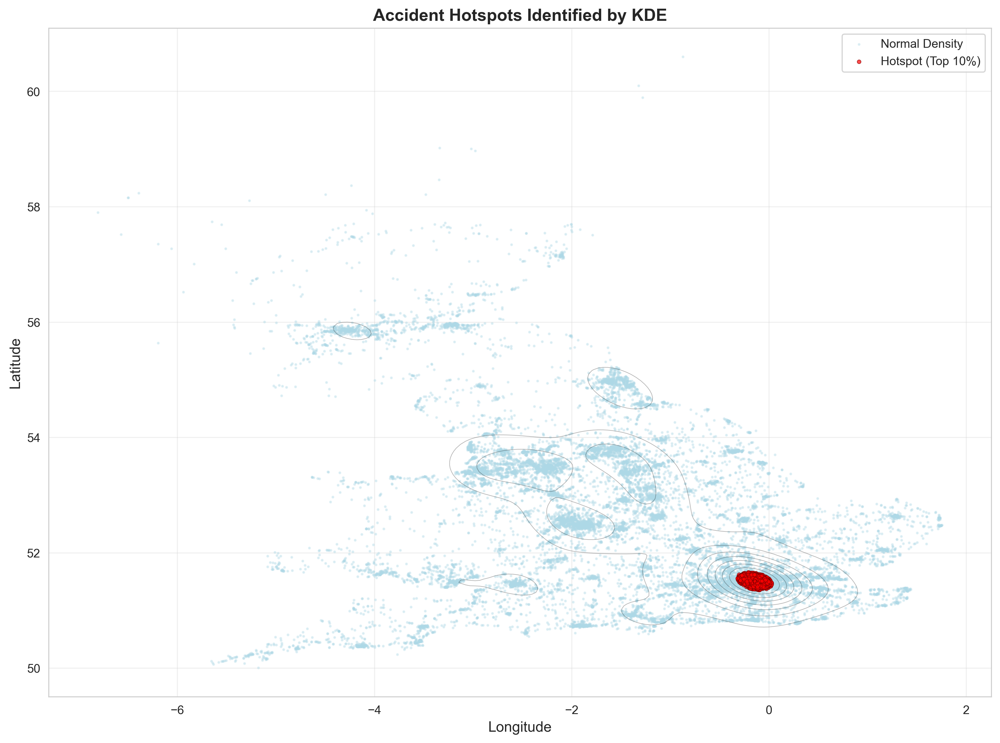
Applying K-Means to divide geographic space into segmented collision centers.
"""
Lab 2 Part 2 - Experiment 3: K-means Clustering for Hotspot Identification
Paper: Kernel density estimation and K-means clustering to profile road accident hotspots
This script applies K-means clustering to identify geographic accident hotspots.
"""
import pandas as pd
import numpy as np
import matplotlib.pyplot as plt
import seaborn as sns
from sklearn.cluster import KMeans
from sklearn.preprocessing import StandardScaler
from sklearn.metrics import silhouette_score, davies_bouldin_score
# Set style
sns.set_style("whitegrid")
plt.rcParams['figure.figsize'] = (14, 10)
print("="*70)
print("EXPERIMENT 3: K-MEANS CLUSTERING FOR HOTSPOT IDENTIFICATION")
print("="*70)
# Load dataset
print("\n1. Loading Dataset...")
df = pd.read_csv('./data/lab2part2_cleaned_data.csv')
print(f" Loaded {len(df)} accident records")
# Extract spatial coordinates
print("\n2. Preparing Features for Clustering...")
X = df[['Longitude', 'Latitude']].values
print(f" Feature matrix shape: {X.shape}")
# Standardize features
scaler = StandardScaler()
X_scaled = scaler.fit_transform(X)
print(" Features standardized")
# =============================================================================
# ELBOW METHOD - DETERMINE OPTIMAL K
# =============================================================================
print("\n3. Determining Optimal Number of Clusters (Elbow Method)...")
inertias = []
silhouette_scores = []
k_range = range(2, 16)
for k in k_range:
kmeans = KMeans(n_clusters=k, init='k-means++', random_state=42, n_init=10)
kmeans.fit(X_scaled)
inertias.append(kmeans.inertia_)
silhouette_scores.append(silhouette_score(X_scaled, kmeans.labels_))
print(f" K={k:2d}: Inertia={kmeans.inertia_:10.2f}, Silhouette={silhouette_scores[-1]:.4f}")
# Plot elbow curve
fig, (ax1, ax2) = plt.subplots(1, 2, figsize=(14, 5))
# Inertia plot
ax1.plot(k_range, inertias, 'bo-', linewidth=2, markersize=8)
ax1.set_xlabel('Number of Clusters (K)', fontsize=12)
ax1.set_ylabel('Inertia (Within-cluster sum of squares)', fontsize=12)
ax1.set_title('Elbow Method - Inertia', fontsize=14, fontweight='bold')
ax1.grid(True, alpha=0.3)
# Silhouette score plot
ax2.plot(k_range, silhouette_scores, 'ro-', linewidth=2, markersize=8)
ax2.set_xlabel('Number of Clusters (K)', fontsize=12)
ax2.set_ylabel('Silhouette Score', fontsize=12)
ax2.set_title('Silhouette Score by K', fontsize=14, fontweight='bold')
ax2.grid(True, alpha=0.3)
plt.tight_layout()
plt.savefig('./data/lab2part2_elbow_method.png', dpi=300, bbox_inches='tight')
print(f"\n Saved: lab2part2_elbow_method.png")
# Select optimal K (can be adjusted based on elbow)
optimal_k = 8 # You can change this based on the elbow curve
print(f"\n4. Selected K = {optimal_k} clusters")
# =============================================================================
# APPLY K-MEANS CLUSTERING
# =============================================================================
print("\n5. Applying K-means Clustering...")
kmeans = KMeans(n_clusters=optimal_k, init='k-means++', random_state=42, n_init=20)
df['Cluster'] = kmeans.fit_predict(X_scaled)
# Get cluster centers (in original scale)
cluster_centers_scaled = kmeans.cluster_centers_
cluster_centers = scaler.inverse_transform(cluster_centers_scaled)
print(f" Clustering complete")
print(f" Silhouette Score: {silhouette_score(X_scaled, df['Cluster']):.4f}")
print(f" Davies-Bouldin Index: {davies_bouldin_score(X_scaled, df['Cluster']):.4f}")
# Print cluster information
print("\n6. Cluster Statistics:")
for cluster_id in range(optimal_k):
cluster_data = df[df['Cluster'] == cluster_id]
center_lon, center_lat = cluster_centers[cluster_id]
print(f"\n Cluster {cluster_id}:")
print(f" Size: {len(cluster_data)} accidents ({len(cluster_data)/len(df)*100:.1f}%)")
print(f" Center: ({center_lon:.4f}, {center_lat:.4f})")
print(f" Severity: {cluster_data['Accident_Severity'].value_counts().to_dict()}")
# =============================================================================
# VISUALIZATIONS
# =============================================================================
print("\n7. Generating Cluster Visualizations...")
# Create color palette
colors = sns.color_palette('husl', optimal_k)
# Main cluster visualization
fig = plt.figure(figsize=(18, 12))
# 1. Clusters with centers
ax1 = plt.subplot(2, 3, 1)
for cluster_id in range(optimal_k):
cluster_data = df[df['Cluster'] == cluster_id]
ax1.scatter(cluster_data['Longitude'], cluster_data['Latitude'],
c=[colors[cluster_id]], s=10, alpha=0.6,
label=f'Cluster {cluster_id} (n={len(cluster_data)})')
# Plot cluster centers
ax1.scatter(cluster_centers[:, 0], cluster_centers[:, 1],
c='red', s=300, alpha=0.9, marker='*',
edgecolors='black', linewidths=2, label='Centers')
ax1.set_xlabel('Longitude', fontsize=10)
ax1.set_ylabel('Latitude', fontsize=10)
ax1.set_title('K-means Clustering Results', fontsize=12, fontweight='bold')
ax1.legend(loc='best', fontsize=8)
ax1.grid(True, alpha=0.3)
# 2. Cluster sizes
ax2 = plt.subplot(2, 3, 2)
cluster_sizes = df['Cluster'].value_counts().sort_index()
bars = ax2.bar(range(optimal_k), cluster_sizes.values, color=colors, alpha=0.7)
ax2.set_xlabel('Cluster ID', fontsize=10)
ax2.set_ylabel('Number of Accidents', fontsize=10)
ax2.set_title('Cluster Sizes', fontsize=12, fontweight='bold')
ax2.set_xticks(range(optimal_k))
for i, bar in enumerate(bars):
height = bar.get_height()
ax2.text(bar.get_x() + bar.get_width()/2., height,
f'{int(height)}', ha='center', va='bottom', fontsize=8)
# 3. Severity distribution by cluster
ax3 = plt.subplot(2, 3, 3)
severity_by_cluster = pd.crosstab(df['Cluster'], df['Accident_Severity'], normalize='index') * 100
severity_by_cluster.plot(kind='bar', stacked=True, ax=ax3, colormap='RdYlGn_r', alpha=0.8)
ax3.set_xlabel('Cluster ID', fontsize=10)
ax3.set_ylabel('Percentage', fontsize=10)
ax3.set_title('Severity Distribution by Cluster', fontsize=12, fontweight='bold')
ax3.legend(title='Severity', fontsize=8)
ax3.set_xticklabels(ax3.get_xticklabels(), rotation=0)
# 4. Voronoi-like regions (simplified)
ax4 = plt.subplot(2, 3, 4)
for cluster_id in range(optimal_k):
cluster_data = df[df['Cluster'] == cluster_id]
ax4.scatter(cluster_data['Longitude'], cluster_data['Latitude'],
c=[colors[cluster_id]], s=5, alpha=0.4)
# Draw lines from each center to nearby centers
from scipy.spatial import Delaunay
tri = Delaunay(cluster_centers)
ax4.triplot(cluster_centers[:, 0], cluster_centers[:, 1], tri.simplices,
'k-', linewidth=1, alpha=0.3)
ax4.scatter(cluster_centers[:, 0], cluster_centers[:, 1],
c='red', s=200, alpha=0.9, marker='*',
edgecolors='black', linewidths=1.5)
ax4.set_xlabel('Longitude', fontsize=10)
ax4.set_ylabel('Latitude', fontsize=10)
ax4.set_title('Cluster Regions (Delaunay Triangulation)', fontsize=12, fontweight='bold')
ax4.grid(True, alpha=0.3)
# 5. Road type distribution by cluster (top 5 road types)
ax5 = plt.subplot(2, 3, 5)
top_road_types = df['Road_Type'].value_counts().head(5).index
road_by_cluster = pd.crosstab(df['Cluster'], df['Road_Type'])
road_by_cluster[top_road_types].plot(kind='bar', ax=ax5, alpha=0.7)
ax5.set_xlabel('Cluster ID', fontsize=10)
ax5.set_ylabel('Count', fontsize=10)
ax5.set_title('Top 5 Road Types by Cluster', fontsize=12, fontweight='bold')
ax5.legend(fontsize=7, loc='best')
ax5.set_xticklabels(ax5.get_xticklabels(), rotation=0)
# 6. Cluster statistics table
ax6 = plt.subplot(2, 3, 6)
ax6.axis('off')
stats_text = "CLUSTER STATISTICS\n" + "="*50 + "\n\n"
for cluster_id in range(optimal_k):
cluster_data = df[df['Cluster'] == cluster_id]
center_lon, center_lat = cluster_centers[cluster_id]
stats_text += f"Cluster {cluster_id}:\n"
stats_text += f" Size: {len(cluster_data)} ({len(cluster_data)/len(df)*100:.1f}%)\n"
stats_text += f" Center: ({center_lon:.3f}, {center_lat:.3f})\n"
most_severe = cluster_data['Accident_Severity'].value_counts().index[0]
stats_text += f" Most Common Severity: {most_severe}\n\n"
ax6.text(0.1, 0.9, stats_text, fontsize=9, verticalalignment='top',
fontfamily='monospace', bbox=dict(boxstyle='round', facecolor='lightyellow', alpha=0.8))
plt.tight_layout()
plt.savefig('./data/lab2part2_kmeans_clustering.png', dpi=300, bbox_inches='tight')
print(f" Saved: lab2part2_kmeans_clustering.png")
# Additional detailed visualization
fig2, ax = plt.subplots(figsize=(14, 10))
for cluster_id in range(optimal_k):
cluster_data = df[df['Cluster'] == cluster_id]
ax.scatter(cluster_data['Longitude'], cluster_data['Latitude'],
c=[colors[cluster_id]], s=15, alpha=0.5,
label=f'Cluster {cluster_id}')
ax.scatter(cluster_centers[:, 0], cluster_centers[:, 1],
c='red', s=500, alpha=1.0, marker='*',
edgecolors='black', linewidths=3, label='Cluster Centers', zorder=5)
# Add cluster labels
for i, (lon, lat) in enumerate(cluster_centers):
ax.annotate(f'C{i}', (lon, lat), fontsize=14, fontweight='bold',
ha='center', va='center', color='white',
bbox=dict(boxstyle='circle', facecolor='red', alpha=0.7))
ax.set_xlabel('Longitude', fontsize=12)
ax.set_ylabel('Latitude', fontsize=12)
ax.set_title(f'Accident Hotspots - {optimal_k} Clusters Identified by K-means',
fontsize=14, fontweight='bold')
ax.legend(loc='best', fontsize=10)
ax.grid(True, alpha=0.3)
plt.savefig('./data/lab2part2_kmeans_detailed.png', dpi=300, bbox_inches='tight')
print(f" Saved: lab2part2_kmeans_detailed.png")
# Save results
df.to_csv('./data/lab2part2_with_clusters.csv', index=False)
print(f" Saved: lab2part2_with_clusters.csv")
np.savetxt('./data/lab2part2_cluster_centers.csv', cluster_centers,
delimiter=',', header='Longitude,Latitude', comments='')
print(f" Saved: lab2part2_cluster_centers.csv")
# =============================================================================
# SUMMARY
# =============================================================================
print("\n" + "="*70)
print("SUMMARY")
print("="*70)
print(f"Total Accidents: {len(df)}")
print(f"Number of Clusters: {optimal_k}")
print(f"Silhouette Score: {silhouette_score(X_scaled, df['Cluster']):.4f}")
print(f"Davies-Bouldin Index: {davies_bouldin_score(X_scaled, df['Cluster']):.4f}")
print(f"\nCluster Size Range: {cluster_sizes.min()} - {cluster_sizes.max()} accidents")
print(f"Average Cluster Size: {cluster_sizes.mean():.0f} accidents")
print("="*70)
plt.show()
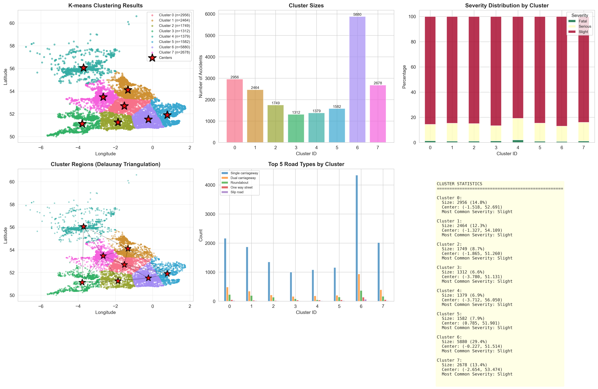
Conducting per-cluster statistical profiles focusing on vulnerability traits.
"""
Lab 2 Part 2 - Experiment 4: Hotspot Profiling & Characterization
Paper: Kernel density estimation and K-means clustering to profile road accident hotspots
This script profiles and characterizes each identified accident hotspot cluster.
"""
import pandas as pd
import numpy as np
import matplotlib.pyplot as plt
import seaborn as sns
from datetime import datetime
# Set style
sns.set_style("whitegrid")
plt.rcParams['figure.figsize'] = (16, 12)
print("="*70)
print("EXPERIMENT 4: HOTSPOT PROFILING & CHARACTERIZATION")
print("="*70)
# Load clustered dataset
print("\n1. Loading Clustered Dataset...")
df = pd.read_csv('./data/lab2part2_with_clusters.csv')
cluster_centers = np.loadtxt('./data/lab2part2_cluster_centers.csv', delimiter=',', skiprows=1)
print(f" Loaded {len(df)} accident records")
print(f" Number of clusters: {df['Cluster'].nunique()}")
# Parse temporal data
df['Date'] = pd.to_datetime(df['Date'], errors='coerce')
df['Year'] = df['Date'].dt.year
df['Month'] = df['Date'].dt.month
df['DayOfWeek'] = df['Date'].dt.dayofweek
df['Hour'] = pd.to_datetime(df['Time'], format='%H:%M', errors='coerce').dt.hour
day_names = ['Mon', 'Tue', 'Wed', 'Thu', 'Fri', 'Sat', 'Sun']
num_clusters = df['Cluster'].nunique()
# =============================================================================
# PROFILE EACH CLUSTER
# =============================================================================
print("\n2. Profiling Each Hotspot Cluster...\n")
cluster_profiles = []
for cluster_id in range(num_clusters):
cluster_data = df[df['Cluster'] == cluster_id]
profile = {
'Cluster_ID': cluster_id,
'Total_Accidents': len(cluster_data),
'Percentage': len(cluster_data) / len(df) * 100,
'Center_Lon': cluster_centers[cluster_id][0],
'Center_Lat': cluster_centers[cluster_id][1],
'Most_Common_Severity': cluster_data['Accident_Severity'].mode()[0] if len(cluster_data) > 0 else 'N/A',
'Fatal_Count': (cluster_data['Accident_Severity'] == 'Fatal').sum(),
'Serious_Count': (cluster_data['Accident_Severity'] == 'Serious').sum(),
'Slight_Count': (cluster_data['Accident_Severity'] == 'Slight').sum(),
'Most_Common_Road': cluster_data['Road_Type'].mode()[0] if len(cluster_data) > 0 else 'N/A',
'Most_Common_Weather': cluster_data['Weather_Conditions'].mode()[0] if len(cluster_data) > 0 else 'N/A',
'Peak_Month': cluster_data['Month'].mode()[0] if len(cluster_data) > 0 else 'N/A',
'Peak_Day': day_names[cluster_data['DayOfWeek'].mode()[0]] if len(cluster_data) > 0 else 'N/A',
}
cluster_profiles.append(profile)
print(f"Cluster {cluster_id}:")
print(f" Location: ({profile['Center_Lon']:.4f}, {profile['Center_Lat']:.4f})")
print(f" Accidents: {profile['Total_Accidents']} ({profile['Percentage']:.1f}%)")
print(f" Severity: {profile['Most_Common_Severity']}")
print(f" • Fatal: {profile['Fatal_Count']}, Serious: {profile['Serious_Count']}, Slight: {profile['Slight_Count']}")
print(f" Road Type: {profile['Most_Common_Road']}")
print(f" Weather: {profile['Most_Common_Weather']}")
print(f" Peak Month: {profile['Peak_Month']}, Peak Day: {profile['Peak_Day']}")
print()
# Convert to DataFrame
profile_df = pd.DataFrame(cluster_profiles)
profile_df.to_csv('./data/lab2part2_cluster_profiles.csv', index=False)
print(f"Saved: lab2part2_cluster_profiles.csv")
# =============================================================================
# VISUALIZATIONS
# =============================================================================
print("\n3. Generating Hotspot Profile Visualizations...")
# Create comprehensive figure
fig = plt.figure(figsize=(20, 14))
# 1. Severity comparison across clusters
ax1 = plt.subplot(3, 3, 1)
severity_data = profile_df[['Cluster_ID', 'Fatal_Count', 'Serious_Count', 'Slight_Count']].set_index('Cluster_ID')
severity_data.plot(kind='bar', stacked=True, ax=ax1, color=['darkred', 'orange', 'lightblue'])
ax1.set_xlabel('Cluster ID', fontsize=10)
ax1.set_ylabel('Number of Accidents', fontsize=10)
ax1.set_title('Severity Distribution by Cluster', fontsize=12, fontweight='bold')
ax1.legend(title='Severity', fontsize=8)
ax1.set_xticklabels(ax1.get_xticklabels(), rotation=0)
# 2. Cluster sizes pie chart
ax2 = plt.subplot(3, 3, 2)
ax2.pie(profile_df['Total_Accidents'], labels=[f'C{i}' for i in profile_df['Cluster_ID']],
autopct='%1.1f%%', startangle=90)
ax2.set_title('Accident Distribution Across Clusters', fontsize=12, fontweight='bold')
# 3. Road type distribution by cluster
ax3 = plt.subplot(3, 3, 3)
road_types = df.groupby('Cluster')['Road_Type'].apply(lambda x: x.value_counts().head(3))
top_clusters = profile_df.nlargest(3, 'Total_Accidents')['Cluster_ID'].values
road_summary = []
for cid in top_clusters:
cluster_data = df[df['Cluster'] == cid]
top_road = cluster_data['Road_Type'].value_counts().head(1)
if len(top_road) > 0:
road_summary.append({'Cluster': f'C{cid}', 'Road_Type': top_road.index[0], 'Count': top_road.values[0]})
if road_summary:
road_df = pd.DataFrame(road_summary)
ax3.barh(road_df['Cluster'], road_df['Count'], color='teal', alpha=0.7)
ax3.set_xlabel('Number of Accidents', fontsize=10)
ax3.set_title('Most Common Road Type (Top 3 Clusters)', fontsize=12, fontweight='bold')
ax3.invert_yaxis()
# 4. Weather conditions across clusters
ax4 = plt.subplot(3, 3, 4)
weather_counts = pd.crosstab(df['Cluster'], df['Weather_Conditions'])
top_weather = df['Weather_Conditions'].value_counts().head(5).index
weather_counts[top_weather].plot(kind='bar', ax=ax4, stacked=False, alpha=0.7)
ax4.set_xlabel('Cluster ID', fontsize=10)
ax4.set_ylabel('Count', fontsize=10)
ax4.set_title('Top 5 Weather Conditions by Cluster', fontsize=12, fontweight='bold')
ax4.legend(fontsize=7, loc='best')
ax4.set_xticklabels(ax4.get_xticklabels(), rotation=0)
# 5. Temporal patterns - Day of week
ax5 = plt.subplot(3, 3, 5)
dow_counts = pd.crosstab(df['Cluster'], df['DayOfWeek'])
dow_counts.plot(kind='bar', ax=ax5, alpha=0.7, cmap='viridis')
ax5.set_xlabel('Cluster ID', fontsize=10)
ax5.set_ylabel('Count', fontsize=10)
ax5.set_title('Accidents by Day of Week', fontsize=12, fontweight='bold')
ax5.legend(title='Day', labels=day_names, fontsize=7)
ax5.set_xticklabels(ax5.get_xticklabels(), rotation=0)
# 6. Monthly distribution
ax6 = plt.subplot(3, 3, 6)
month_counts = pd.crosstab(df['Cluster'], df['Month'])
month_counts.plot(kind='line', ax=ax6, marker='o', alpha=0.7)
ax6.set_xlabel('Month', fontsize=10)
ax6.set_ylabel('Number of Accidents', fontsize=10)
ax6.set_title('Monthly Accident Trends by Cluster', fontsize=12, fontweight='bold')
ax6.legend(title='Cluster', fontsize=7, loc='best')
ax6.grid(True, alpha=0.3)
# 7. Risk score heatmap
ax7 = plt.subplot(3, 3, 7)
# Calculate risk score based on severity
df['Risk_Score'] = df['Accident_Severity'].map({'Fatal': 3, 'Serious': 2, 'Slight': 1})
risk_matrix = df.groupby(['Cluster', pd.cut(df['Hour'], bins=[-1, 6, 12, 18, 24],
labels=['Night', 'Morning', 'Afternoon', 'Evening'])])['Risk_Score'].mean().unstack()
sns.heatmap(risk_matrix, annot=True, fmt='.2f', cmap='YlOrRd', ax=ax7, cbar_kws={'label': 'Avg Risk'})
ax7.set_xlabel('Time Period', fontsize=10)
ax7.set_ylabel('Cluster ID', fontsize=10)
ax7.set_title('Risk Score by Time of Day', fontsize=12, fontweight='bold')
# 8. Cluster comparison - boxplot of coordinates
ax8 = plt.subplot(3, 3, 8)
df.boxplot(column='Latitude', by='Cluster', ax=ax8)
ax8.set_xlabel('Cluster ID', fontsize=10)
ax8.set_ylabel('Latitude', fontsize=10)
ax8.set_title('Latitude Distribution by Cluster', fontsize=12, fontweight='bold')
plt.sca(ax8)
plt.xticks(rotation=0)
# 9. High-risk clusters
ax9 = plt.subplot(3, 3, 9)
risk_by_cluster = df.groupby('Cluster')['Risk_Score'].mean().sort_values(ascending=False)
bars = ax9.bar(range(len(risk_by_cluster)), risk_by_cluster.values,
color=plt.cm.RdYlGn_r(risk_by_cluster.values / risk_by_cluster.max()))
ax9.set_xlabel('Cluster ID (sorted by risk)', fontsize=10)
ax9.set_ylabel('Average Risk Score', fontsize=10)
ax9.set_title('Clusters Ranked by Risk', fontsize=12, fontweight='bold')
ax9.set_xticks(range(len(risk_by_cluster)))
ax9.set_xticklabels(risk_by_cluster.index)
plt.tight_layout()
plt.savefig('./data/lab2part2_hotspot_profiles.png', dpi=300, bbox_inches='tight')
print(f" Saved: lab2part2_hotspot_profiles.png")
# =============================================================================
# DETAILED INDIVIDUAL CLUSTER PROFILES
# =============================================================================
print("\n4. Generating Individual Cluster Profile Cards...")
# Create individual profile for top 4 clusters
top_4_clusters = profile_df.nlargest(4, 'Total_Accidents')['Cluster_ID'].values
fig2, axes = plt.subplots(2, 2, figsize=(16, 12))
axes = axes.flatten()
for idx, cluster_id in enumerate(top_4_clusters):
cluster_data = df[df['Cluster'] == cluster_id]
profile = cluster_profiles[cluster_id]
ax = axes[idx]
ax.axis('off')
# Create profile card
card_text = f"""
CLUSTER {cluster_id} PROFILE
{'='*50}
LOCATION:
• Center: ({profile['Center_Lon']:.4f}, {profile['Center_Lat']:.4f})
ACCIDENT STATISTICS:
• Total Accidents: {profile['Total_Accidents']} ({profile['Percentage']:.1f}%)
• Fatal: {profile['Fatal_Count']}
• Serious: {profile['Serious_Count']}
• Slight: {profile['Slight_Count']}
CHARACTERISTICS:
• Most Common Severity: {profile['Most_Common_Severity']}
• Primary Road Type: {profile['Most_Common_Road']}
• Typical Weather: {profile['Most_Common_Weather']}
TEMPORAL PATTERNS:
• Peak Month: {profile['Peak_Month']}
• Peak Day: {profile['Peak_Day']}
RISK ASSESSMENT:
• Avg Risk Score: {cluster_data['Risk_Score'].mean():.2f}/3.0
• Severity Index: {(profile['Fatal_Count']*3 + profile['Serious_Count']*2 + profile['Slight_Count']) / profile['Total_Accidents']:.2f}
"""
# Color code by risk
risk_score = cluster_data['Risk_Score'].mean()
bg_color = 'lightcoral' if risk_score > 1.5 else 'lightyellow' if risk_score > 1.2 else 'lightgreen'
ax.text(0.5, 0.5, card_text, fontsize=9, verticalalignment='center',
horizontalalignment='center', fontfamily='monospace',
bbox=dict(boxstyle='round,pad=1', facecolor=bg_color, alpha=0.7, edgecolor='black', linewidth=2))
plt.suptitle('Top 4 Accident Hotspot Profiles (by size)', fontsize=14, fontweight='bold', y=0.98)
plt.tight_layout()
plt.savefig('./data/lab2part2_cluster_cards.png', dpi=300, bbox_inches='tight')
print(f" Saved: lab2part2_cluster_cards.png")
# =============================================================================
# SUMMARY REPORT
# =============================================================================
print("\n" + "="*70)
print("HOTSPOT PROFILING SUMMARY")
print("="*70)
print(f"\nTotal Clusters Analyzed: {num_clusters}")
print(f"Total Accidents: {len(df)}")
print("\nHIGHEST RISK CLUSTERS:")
for i, (cluster_id, risk) in enumerate(risk_by_cluster.head(3).items(), 1):
profile = cluster_profiles[cluster_id]
print(f"{i}. Cluster {cluster_id}:")
print(f" Risk Score: {risk:.3f}")
print(f" Accidents: {profile['Total_Accidents']}")
print(f" Severity: {profile['Most_Common_Severity']}")
print(f" Location: ({profile['Center_Lon']:.4f}, {profile['Center_Lat']:.4f})")
print("\nLARGEST HOTSPOTS:")
for i, row in profile_df.nlargest(3, 'Total_Accidents').iterrows():
print(f"{i+1}. Cluster {row['Cluster_ID']}:")
print(f" Accidents: {row['Total_Accidents']} ({row['Percentage']:.1f}%)")
print(f" Location: ({row['Center_Lon']:.4f}, {row['Center_Lat']:.4f})")
print("="*70)
plt.show()
Providing a unified schema to rank localized hotspots efficiently.
"""
Lab 2 Part 2 - Experiment 5: Integrated KDE & K-means Analysis
Paper: Kernel density estimation and K-means clustering to profile road accident hotspots
This script combines KDE and K-means results for comprehensive hotspot analysis.
"""
import pandas as pd
import numpy as np
import matplotlib.pyplot as plt
import seaborn as sns
from scipy.stats import gaussian_kde
import warnings
warnings.filterwarnings('ignore')
# Set style
sns.set_style("whitegrid")
plt.rcParams['figure.figsize'] = (18, 14)
print("="*70)
print("EXPERIMENT 5: INTEGRATED KDE & K-MEANS ANALYSIS")
print("="*70)
# Load all processed data
print("\n1. Loading Processed Datasets...")
df = pd.read_csv('./data/lab2part2_with_clusters.csv')
cluster_centers = np.loadtxt('./data/lab2part2_cluster_centers.csv', delimiter=',', skiprows=1)
cluster_profiles = pd.read_csv('./data/lab2part2_cluster_profiles.csv')
print(f" Loaded {len(df)} accident records")
print(f" Number of clusters: {df['Cluster'].nunique()}")
# Calculate risk scores
df['Risk_Score'] = df['Accident_Severity'].map({'Fatal': 3, 'Serious': 2, 'Slight': 1})
num_clusters = df['Cluster'].nunique()
# =============================================================================
# RECALCULATE KDE FOR OVERLAY
# =============================================================================
print("\n2. Computing Integrated KDE...")
coordinates = df[['Longitude', 'Latitude']].values
kde = gaussian_kde(coordinates.T)
# Create grid
x_min, x_max = df['Longitude'].min() - 0.3, df['Longitude'].max() + 0.3
y_min, y_max = df['Latitude'].min() - 0.3, df['Latitude'].max() + 0.3
xx, yy = np.meshgrid(np.linspace(x_min, x_max, 150),
np.linspace(y_min, y_max, 150))
grid_coords = np.vstack([xx.ravel(), yy.ravel()])
density = kde(grid_coords).reshape(xx.shape)
print(" KDE computation complete")
# =============================================================================
# COMPREHENSIVE INTEGRATED VISUALIZATIONS
# =============================================================================
print("\n3. Generating Integrated Visualizations...")
# Main integrated figure
fig = plt.figure(figsize=(20, 16))
# 1. KDE + K-means Overlay
ax1 = plt.subplot(3, 3, 1)
# KDE heatmap
contour = ax1.contourf(xx, yy, density, levels=15, cmap='YlOrRd', alpha=0.6)
# Cluster scatter
colors = sns.color_palette('husl', num_clusters)
for cluster_id in range(num_clusters):
cluster_data = df[df['Cluster'] == cluster_id]
ax1.scatter(cluster_data['Longitude'], cluster_data['Latitude'],
c=[colors[cluster_id]], s=8, alpha=0.5, edgecolors='none',
label=f'C{cluster_id}')
# Cluster centers
ax1.scatter(cluster_centers[:, 0], cluster_centers[:, 1],
c='red', s=400, alpha=1.0, marker='*',
edgecolors='black', linewidths=2, zorder=10)
ax1.set_xlabel('Longitude', fontsize=10)
ax1.set_ylabel('Latitude', fontsize=10)
ax1.set_title('Integrated KDE + K-means Hotspot Analysis', fontsize=12, fontweight='bold')
plt.colorbar(contour, ax=ax1, label='KDE Density')
ax1.legend(loc='best', fontsize=7, ncol=2)
# 2. High-density clusters identification
ax2 = plt.subplot(3, 3, 2)
# Calculate average density per cluster
cluster_densities = []
for cluster_id in range(num_clusters):
cluster_data = df[df['Cluster'] == cluster_id]
cluster_coords = cluster_data[['Longitude', 'Latitude']].values
if len(cluster_coords) > 0:
avg_density = kde(cluster_coords.T).mean()
cluster_densities.append(avg_density)
else:
cluster_densities.append(0)
df_cluster_density = pd.DataFrame({
'Cluster': range(num_clusters),
'Avg_KDE_Density': cluster_densities,
'Size': [len(df[df['Cluster'] == i]) for i in range(num_clusters)]
})
# Scatter plot: size vs density
scatter = ax2.scatter(df_cluster_density['Size'], df_cluster_density['Avg_KDE_Density'],
s=200, c=df_cluster_density['Avg_KDE_Density'],
cmap='RdYlGn_r', alpha=0.7, edgecolors='black', linewidths=1)
for i, row in df_cluster_density.iterrows():
ax2.annotate(f'C{row["Cluster"]}',
(row['Size'], row['Avg_KDE_Density']),
fontsize=9, fontweight='bold', ha='center', va='center')
ax2.set_xlabel('Cluster Size (number of accidents)', fontsize=10)
ax2.set_ylabel('Average KDE Density', fontsize=10)
ax2.set_title('Cluster Size vs KDE Density', fontsize=12, fontweight='bold')
plt.colorbar(scatter, ax=ax2, label='Density')
ax2.grid(True, alpha=0.3)
# 3. Risk-weighted hotspot map
ax3 = plt.subplot(3, 3, 3)
for cluster_id in range(num_clusters):
cluster_data = df[df['Cluster'] == cluster_id]
risk_color = plt.cm.RdYlGn_r(cluster_data['Risk_Score'].mean() / 3.0)
ax3.scatter(cluster_data['Longitude'], cluster_data['Latitude'],
c=[risk_color], s=10, alpha=0.6)
ax3.scatter(cluster_centers[:, 0], cluster_centers[:, 1],
c='blue', s=300, alpha=0.8, marker='D',
edgecolors='white', linewidths=2, label='Cluster Centers')
ax3.set_xlabel('Longitude', fontsize=10)
ax3.set_ylabel('Latitude', fontsize=10)
ax3.set_title('Risk-Weighted Hotspot Map', fontsize=12, fontweight='bold')
ax3.legend()
# 4. Severity heatmap by cluster
ax4 = plt.subplot(3, 3, 4)
severity_matrix = pd.crosstab(df['Cluster'], df['Accident_Severity'])
severity_matrix = severity_matrix[['Slight', 'Serious', 'Fatal']] if 'Fatal' in severity_matrix.columns else severity_matrix
sns.heatmap(severity_matrix, annot=True, fmt='d', cmap='Reds', ax=ax4, cbar_kws={'label': 'Count'})
ax4.set_xlabel('Severity', fontsize=10)
ax4.set_ylabel('Cluster ID', fontsize=10)
ax4.set_title('Severity Distribution Heatmap', fontsize=12, fontweight='bold')
# 5. Combined density score
ax5 = plt.subplot(3, 3, 5)
df_cluster_density['Risk_Score'] = [df[df['Cluster'] == i]['Risk_Score'].mean()
for i in range(num_clusters)]
df_cluster_density['Combined_Score'] = (
df_cluster_density['Avg_KDE_Density'] / df_cluster_density['Avg_KDE_Density'].max() * 0.4 +
df_cluster_density['Size'] / df_cluster_density['Size'].max() * 0.3 +
df_cluster_density['Risk_Score'] / 3.0 * 0.3
)
df_cluster_density_sorted = df_cluster_density.sort_values('Combined_Score', ascending=False)
bars = ax5.barh(range(num_clusters), df_cluster_density_sorted['Combined_Score'].values,
color=plt.cm.RdYlGn_r(df_cluster_density_sorted['Combined_Score'].values))
ax5.set_yticks(range(num_clusters))
ax5.set_yticklabels([f"C{int(x)}" for x in df_cluster_density_sorted['Cluster'].values])
ax5.set_xlabel('Combined Priority Score', fontsize=10)
ax5.set_title('Hotspot Priority Ranking', fontsize=12, fontweight='bold')
ax5.invert_yaxis()
for i, (idx, row) in enumerate(df_cluster_density_sorted.iterrows()):
ax5.text(row['Combined_Score'], i, f" {row['Combined_Score']:.3f}",
va='center', fontsize=8)
# 6. Road type analysis
ax6 = plt.subplot(3, 3, 6)
top_3_clusters = df_cluster_density_sorted.head(3)['Cluster'].values
road_data = []
for cid in top_3_clusters:
cluster_data = df[df['Cluster'] == cid]
top_roads = cluster_data['Road_Type'].value_counts().head(3)
for road, count in top_roads.items():
road_data.append({'Cluster': f'C{int(cid)}', 'Road_Type': road, 'Count': count})
if road_data:
road_df = pd.DataFrame(road_data)
road_pivot = road_df.pivot(index='Cluster', columns='Road_Type', values='Count').fillna(0)
road_pivot.plot(kind='bar', ax=ax6, stacked=True, alpha=0.8)
ax6.set_xlabel('Cluster (Top 3 Priority)', fontsize=10)
ax6.set_ylabel('Number of Accidents', fontsize=10)
ax6.set_title('Road Type Distribution (Priority Hotspots)', fontsize=12, fontweight='bold')
ax6.legend(fontsize=7, loc='best')
ax6.set_xticklabels(ax6.get_xticklabels(), rotation=0)
# 7. Weather impact analysis
ax7 = plt.subplot(3, 3, 7)
weather_risk = df.groupby('Weather_Conditions')['Risk_Score'].agg(['mean', 'count'])
weather_risk = weather_risk[weather_risk['count'] > 100].sort_values('mean', ascending=False).head(8)
bars = ax7.barh(range(len(weather_risk)), weather_risk['mean'].values,
color=plt.cm.RdYlGn_r(weather_risk['mean'].values / weather_risk['mean'].max()))
ax7.set_yticks(range(len(weather_risk)))
ax7.set_yticklabels(weather_risk.index, fontsize=8)
ax7.set_xlabel('Average Risk Score', fontsize=10)
ax7.set_title('Weather Conditions by Risk', fontsize=12, fontweight='bold')
ax7.invert_yaxis()
# 8. Spatial distribution statistics
ax8 = plt.subplot(3, 3, 8)
stats_by_cluster = df.groupby('Cluster').agg({
'Longitude': ['mean', 'std'],
'Latitude': ['mean', 'std'],
'Risk_Score': 'mean'
}).round(4)
# Plot cluster spread
for cluster_id in range(num_clusters):
cluster_data = df[df['Cluster'] == cluster_id]
lon_std = cluster_data['Longitude'].std()
lat_std = cluster_data['Latitude'].std()
center = cluster_centers[cluster_id]
circle = plt.Circle((center[0], center[1]),
radius=np.sqrt(lon_std**2 + lat_std**2),
alpha=0.3, color=colors[cluster_id])
ax8.add_patch(circle)
ax8.scatter([center[0]], [center[1]], s=100, c=[colors[cluster_id]],
edgecolors='black', linewidths=1, zorder=5)
ax8.text(center[0], center[1], f'C{cluster_id}',
ha='center', va='center', fontsize=8, fontweight='bold')
ax8.set_xlabel('Longitude', fontsize=10)
ax8.set_ylabel('Latitude', fontsize=10)
ax8.set_title('Cluster Spatial Spread', fontsize=12, fontweight='bold')
ax8.set_xlim(x_min, x_max)
ax8.set_ylim(y_min, y_max)
ax8.grid(True, alpha=0.3)
# 9. Summary statistics panel
ax9 = plt.subplot(3, 3, 9)
ax9.axis('off')
summary_text = f"""
INTEGRATED ANALYSIS SUMMARY
{'='*55}
OVERALL STATISTICS:
• Total Accidents: {len(df):,}
• Number of Hotspots: {num_clusters}
• Avg Cluster Size: {len(df)/num_clusters:.0f}
TOP PRIORITY HOTSPOTS:
"""
for i, (idx, row) in enumerate(df_cluster_density_sorted.head(3).iterrows(), 1):
cid = int(row['Cluster'])
summary_text += f"\n{i}. Cluster {cid}:\n"
summary_text += f" Priority Score: {row['Combined_Score']:.3f}\n"
summary_text += f" Accidents: {int(row['Size'])}\n"
summary_text += f" Avg Risk: {row['Risk_Score']:.2f}\n"
summary_text += f" KDE Density: {row['Avg_KDE_Density']:.5f}\n"
summary_text += f"""
METHODOLOGY:
• KDE bandwidth: Auto (Scott's rule)
• K-means init: k-means++
• Combined score weights:
- KDE density: 40%
- Cluster size: 30%
- Risk severity: 30%
"""
ax9.text(0.1, 0.5, summary_text, fontsize=9, verticalalignment='center',
fontfamily='monospace', bbox=dict(boxstyle='round', facecolor='lightblue',
alpha=0.7, edgecolor='black', linewidth=2))
plt.tight_layout()
plt.savefig('./data/lab2part2_integrated_analysis.png', dpi=300, bbox_inches='tight')
print(f" Saved: lab2part2_integrated_analysis.png")
# =============================================================================
# CREATE FINAL HOTSPOT MAP
# =============================================================================
print("\n4. Creating Final Comprehensive Hotspot Map...")
fig2, ax = plt.subplots(figsize=(16, 12))
# KDE contour background
contour_bg = ax.contourf(xx, yy, density, levels=20, cmap='YlOrRd', alpha=0.4)
# Plot all accidents with cluster colors
for cluster_id in range(num_clusters):
cluster_data = df[df['Cluster'] == cluster_id]
size_factor = len(cluster_data) / len(df) * 100
ax.scatter(cluster_data['Longitude'], cluster_data['Latitude'],
c=[colors[cluster_id]], s=5, alpha=0.5,
label=f'C{cluster_id} (n={len(cluster_data)})')
# Highlight top priority clusters
top_priority = df_cluster_density_sorted.head(3)['Cluster'].values
for cid in top_priority:
center = cluster_centers[int(cid)]
# Draw circle around priority hotspot
circle = plt.Circle((center[0], center[1]), radius=0.15,
fill=False, edgecolor='red', linewidth=3, linestyle='--')
ax.add_patch(circle)
# Plot cluster centers with priority indicators
for cluster_id in range(num_clusters):
center = cluster_centers[cluster_id]
priority_rank = df_cluster_density_sorted[df_cluster_density_sorted['Cluster'] == cluster_id].index[0] + 1
if cluster_id in top_priority:
marker_size = 600
marker_color = 'red'
edge_width = 3
else:
marker_size = 300
marker_color = 'orange'
edge_width = 2
ax.scatter([center[0]], [center[1]], s=marker_size,
c=marker_color, marker='*', alpha=0.9,
edgecolors='black', linewidths=edge_width, zorder=10)
# Label with priority rank
ax.annotate(f'#{priority_rank}', (center[0], center[1]),
xytext=(10, 10), textcoords='offset points',
fontsize=11, fontweight='bold',
bbox=dict(boxstyle='round,pad=0.3', facecolor='yellow',
edgecolor='black', linewidth=1.5),
zorder=11)
ax.set_xlabel('Longitude', fontsize=12)
ax.set_ylabel('Latitude', fontsize=12)
ax.set_title('Final Accident Hotspot Map - KDE + K-means Integration\n' +
'Red stars indicate high-priority intervention areas',
fontsize=14, fontweight='bold')
plt.colorbar(contour_bg, ax=ax, label='KDE Accident Density')
ax.legend(loc='best', fontsize=8, ncol=2)
ax.grid(True, alpha=0.3)
plt.savefig('./data/lab2part2_final_hotspot_map.png', dpi=300, bbox_inches='tight')
print(f" Saved: lab2part2_final_hotspot_map.png")
# =============================================================================
# SAVE FINAL RESULTS
# =============================================================================
print("\n5. Saving Final Analysis Results...")
# Combined results dataframe
df_cluster_density.to_csv('./data/lab2part2_final_results.csv', index=False)
print(f" Saved: lab2part2_final_results.csv")
# Generate recommendations report
recommendations = []
for i, (idx, row) in enumerate(df_cluster_density_sorted.head(5).iterrows(), 1):
cid = int(row['Cluster'])
cluster_data = df[df['Cluster'] == cid]
rec = {
'Priority_Rank': i,
'Cluster_ID': cid,
'Combined_Score': row['Combined_Score'],
'Center_Longitude': cluster_centers[cid][0],
'Center_Latitude': cluster_centers[cid][1],
'Total_Accidents': int(row['Size']),
'Average_Risk': row['Risk_Score'],
'KDE_Density': row['Avg_KDE_Density'],
'Fatal_Accidents': (cluster_data['Accident_Severity'] == 'Fatal').sum(),
'Serious_Accidents': (cluster_data['Accident_Severity'] == 'Serious').sum(),
'Primary_Road_Type': cluster_data['Road_Type'].mode()[0] if len(cluster_data) > 0 else 'N/A',
'Primary_Weather': cluster_data['Weather_Conditions'].mode()[0] if len(cluster_data) > 0 else 'N/A',
}
recommendations.append(rec)
recommendations_df = pd.DataFrame(recommendations)
recommendations_df.to_csv('./data/lab2part2_recommendations.csv', index=False)
print(f" Saved: lab2part2_recommendations.csv")
# =============================================================================
# FINAL SUMMARY
# =============================================================================
print("\n" + "="*70)
print("INTEGRATED ANALYSIS COMPLETE")
print("="*70)
print(f"\nTotal Accidents Analyzed: {len(df):,}")
print(f"Number of Hotspot Clusters: {num_clusters}")
print(f"Average Cluster Size: {len(df)/num_clusters:.0f} accidents")
print("\n📍 TOP 3 PRIORITY HOTSPOTS FOR INTERVENTION:\n")
for i, rec in enumerate(recommendations[:3], 1):
print(f"{i}. CLUSTER {rec['Cluster_ID']}:")
print(f" Location: ({rec['Center_Longitude']:.4f}, {rec['Center_Latitude']:.4f})")
print(f" Priority Score: {rec['Combined_Score']:.3f}")
print(f" Total Accidents: {rec['Total_Accidents']}")
print(f" Fatal: {rec['Fatal_Accidents']}, Serious: {rec['Serious_Accidents']}")
print(f" Primary Road: {rec['Primary_Road_Type']}")
print(f" Typical Weather: {rec['Primary_Weather']}")
print()
print("📊 OUTPUT FILES GENERATED:")
print(" • lab2part2_cleaned_data.csv")
print(" • lab2part2_with_kde.csv")
print(" • lab2part2_with_clusters.csv")
print(" • lab2part2_cluster_profiles.csv")
print(" • lab2part2_final_results.csv")
print(" • lab2part2_recommendations.csv")
print(" • Multiple visualization PNG files")
print("\n Analysis methodology successfully implemented:")
print(" ✓ Kernel Density Estimation (KDE)")
print(" ✓ K-means Clustering")
print(" ✓ Hotspot Profiling")
print(" ✓ Integrated Risk Assessment")
print("="*70)
plt.show()